НОВОСТИ И ОБЪЯВЛЕНИЯ
Сретение Господне
15 февраля 2022

Во вторник 15 февраля состоялась Божественная литургия в честь Сретения Господня, великого христианского праздника, посвящённого воспоминанию событий, происшедших в 40-й день земной жизни Иисуса Христа, а именно встрече Божественного Младенца в Иерусалимском Храме двумя ветхозаветными праведниками — Симеоном Богоприимцем и Анной Пророчицей.
По закону Моисееву, в сороковой день по рождении младенца мужского пола, первенца, мать должна была явиться с младенцем в храм для принесения жертвы о своем очищении, для представления младенца Богу и «выкупа», ибо по закону Моисееву все первенцы принадлежали Богу. В жертву приносили агнца (ягненка) и горлицу, а в случае бедности — двух горлиц, или голубиных птенцов. Выкуп же состоял из определенной законом цены (пяти сиклей). Пречистая Дева пришла в храм, чтобы исполнить все по закону. В очистительную жертву она, по своей бедности, могла принести только двух горлиц. В Иерусалимском храме младенца Иисуса встретили праведный Симеон, которому было обещано Святым Духом, что он не умрет, пока не увидит Христа Господня, и вдовица Анна, восьмидесяти четырех лет, жившая при храме. Праведный Симеон взял младенца на руки и сказал: «Ныне отпускаешь раба Твоего, Владыко, по слову Твоему, с миром; ибо видели очи мои спасение Твое, которое Ты уготовал пред лицем всех народов, свет к просвещению язычников и славу народа Твоего Израиля». (Лк 2:29-32).
Анна-пророчица поклонилась новорожденному Христу и вышла из храма, неся горожанам новость о пришествии Мессии: «И она в то время, подойдя, славила Господа и пророчествовала о Нём всем, ожидавшим избавления в Иерусалиме» (Лк 2, 36-38).
Слово «сретение» на старославянском языке означает «встреча», а второе значение этого слова — «радость». И этот праздник символизирует не просто приношение младенца Иисуса в храм и встречу Симеона и Анны с младенцем Иисусом, но встречу всего человечества в лице старца Симеона с Богом.
После Божественной литургии в храме святой благоверной царицы Тамары состоялся великий чин освящения церковных свеч и воды.
Крещение Господне
19 января 2022

В среду 19 января состоялась праздничная литургия, в честь Крещения Господа Бога и Спаса нашего Иисуса Христа.
История праздника такова:
После поста и странствий в пустыне пророк Иоанн Предтеча пришел на реку Иордан, в которой иудеи традиционно совершали религиозные омовения. Здесь он стал говорить народу о покаянии и крещении во оставление грехов и крестить людей в водах.
Народ верил пророчествам Иоанна Предтечи, многие крестились в Иордане. И вот, однажды к берегам реки пришел сам Иисус Христос. В ту пору Ему было тридцать лет. Спаситель попросил Иоанна крестить Его. Пророк был удивлен до глубины души и сказал: «Мне надобно креститься от Тебя, и Ты ли приходишь ко мне?». Но Христос уверил его, что «надлежит нам исполнить всякую правду».
Во время крещения произошло чудо Богоявления: на Христа с небес сошел Дух Святой в облике голубя и глас с неба назвал его Сыном. Евангелист Лука пишет об этом: Отверзлось небо, и Дух Святый нисшел на Него в телесном виде, как голубь, и был глас с небес, глаголющий: Ты Сын Мой Возлюбленный; в Тебе Мое благоволение! (Мф. 3:14-17). Так была явлена в видимых и доступных для человека образах Святая Троица: голос — Бог Отец, голубь — Бог Дух Святой, Иисус Христос — Бог Сын. И было засвидетельствовано, что Иисус — не только Сын Человеческий, но и Сын Божий.
Крещение Господне было первым явлением Христа народу Израиля. Именно после Богоявления за Учителем последовали первые ученики — апостолы Андрей, Симон (Петр), Филипп, Нафанаил.
После Божественной литургии состоялся великий чин освящения воды.
Рождество Христово
07 января 2022
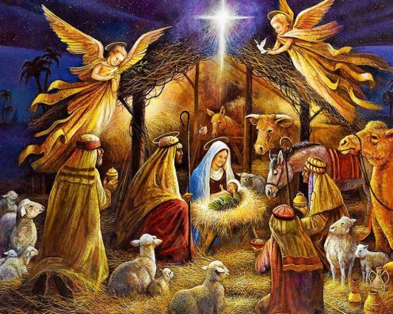
В ночь с 6-го на 7-е января состоялось торжественное богослужение в честь Рождества Христова, которое возглавил настоятель храма, протоиерей - отец Алексей (Савенко).
Он поздравил всех собравшихся со светлым праздником Рождества Христова, пожелал помощи Божией во всех добрых начинаниях, а также рассказал в своей проповеди историю праздника.
Во время царствования в Иудее Ирода, который был под властью Рима, римский император Август издал повеление сделать в подчиненной ему земле иудейской всенародную перепись. Каждый иудей должен был записаться там, где жили его предки. Иосиф и Дева Мария происходили из рода Давидова и потому отправились из Назарета в город Давидов Вифлеем. Придя в Вифлеем, они не могли найти себе места в доме, в гостинице, и остановились за городом, в пещере, куда пастухи загоняли скот в ненастную погоду.
В этой пещере ночью у Пресвятой Девы Марии родился Младенец – Сын Божий, Христос Спаситель мира. Она спеленала Божественного Младенца и положила Его в ясли, куда кладут корм для скота.
После рождения Иисуса первыми Ему пришли поклониться пастухи, извещённые об этом событии явлением ангела.
На небе появилась чудесная звезда, которая привела к младенцу Иисусу из далёких восточных стран мудрецов (волхвов). Они преподнесли дары — золото, ладан и смирну; не как младенцу, а как Царю. К тому времени Святое Семейство уже нашло приют «в доме».
Узнав о рождении Мессии и желая Его уничтожить, царь Иудеи Ирод приказал убить всех младенцев мужского пола в возрасте до двух лет. Однако Христос был чудесно спасён от смерти, потому что ангел повелел Иосифу бежать вместе с семьёй в Египет.
Святое семейство находилось в Египте до тех пор, пока царь Ирод не умер. Вернувшись, Иисус, Богоматерь и Иосиф поселились в Назарете. Оттуда и начался Крестный путь Спасителя. А от Рождества Христова началась новая эра человечества — наша эра.
Дорогие братья и сестры, поздравляем вас с самым светлым и радостным праздником в году! Счастья Вам, пусть Бог всех вас хранит!
Христос рождается! Славите Его!
Фотографии праздничного богослужения - в рубрике "Фотогалерея"
| 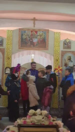 | 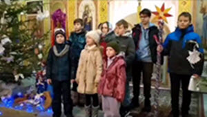 | 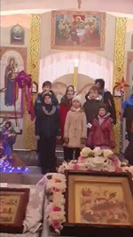 |
Праздник Святителя Николая Чудотворца
19 декабря 2021
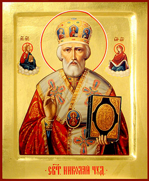
В воскресенье 19 декабря состоялась праздничная литургия дня памяти святителя Николая, архиепископа Мир Ликийского.
Святитель Николай родился в 270 году в городке Патары, который располагался в области Ликии в Малой Азии и был греческой колонией. Родители будущего архиепископа были весьма состоятельными людьми, но при этом верили во Христа и активно помогали бедным.
С детства святитель Николай полностью посвятил себя вере, много времени проводил в храме. Повзрослев, стал чтецом, а затем и священником в церкви, где настоятелем служил его дядя, епископ Николай Патарский. После смерти родителей святитель Николай раздал все свое наследство бедным и продолжил церковное служение.
В годы, когда отношение римских императоров к христианам стало более терпимым, но гонения тем не менее продолжались, он взошел на епископский престол в Мире. Сейчас этот городок называется Демре, он расположен в провинции Анталия в Турции.
Нового архиепископа очень полюбили люди: он был добрым, кротким, справедливым, отзывчивым — ни одна просьба к нему не оставалась без ответа. При всем этом святитель Николай запомнился современникам как непримиримый борец с язычеством — разрушал идолов и капища, и защитник христианства — обличал еретиков.
Своей горячей молитвой ко Христу святитель Николай спас город Миры от страшного голода. Молился и помогал он тонущим морякам на суднах, выводил из заточения в тюрьмах неправедно осужденных.
Святитель Николай дожил до глубокой старости и умер примерно в 345-351 годах (точная дата неизвестна). Еще при жизни он прославился многими чудесами, но еще больше чудес от святителя Николая стало происходить после его смерти. Причем его покровительство распространялось прежде всего на плавающих и путешествующих, на "всех сирых и убогих", на скотоводство и земледелие, считался он также и "хранителем земных вод".
Позднее, уже в православной традиции, святитель Николай получил еще два имени - Николай Чудотворец и Николай Угодник. Главное же состояло в том, что святитель Николай стал поистине народным святым. Ему посвящено огромное число литературных памятников, храмов, монастырей, икон. А сам образ святителя Николая Чудотворца, как милостивого, доброго, земного святого продолжает освящать сердца православных людей.
Объявление
07 декабря 2021
ДОРОГИЕ БРАТЬЯ И СЕСТРЫ!
На протяжении Рождественского поста будет совершаться Таинство Маслособорования.
Дата |
День недели |
Время |
26 декабря |
Воскресенье |
11:00 |
02 января |
Воскресенье |
11:00 |
Запись у дежурной свечницы.
Объявление
07 декабря 2021
ДОРОГИЕ БРАТЬЯ И СЕСТРЫ!
10 декабря 2021 года в 09:00 в храме в честь святой благоверной царицы Тамары Грузинской будет отслужена Божественная Литургия.
По окончании будет отслужена панихида.
Приглашаем всех на совместную молитву.
Прощание с матушкой Ларисой
04 декабря 2021
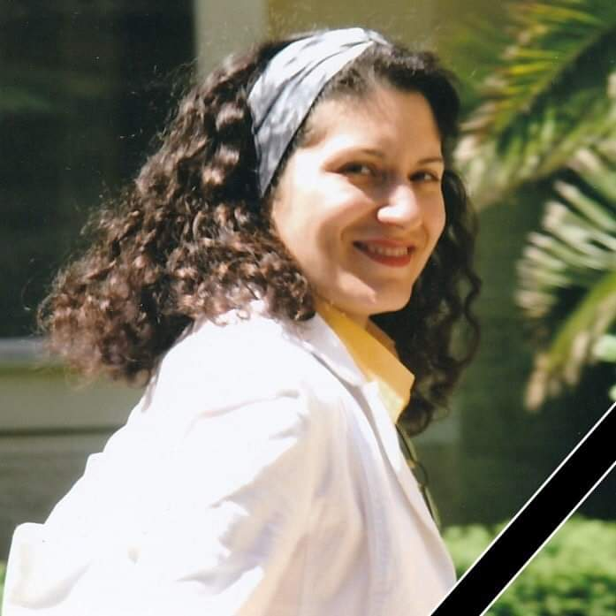
В день праздника Введения во храм Пресвятой Богородицы в церкви святых мучеников Веры, Надежды, Любови и матери их Софии состоялся чин отпевания новопреставленной матушки Ларисы, супруги протоиерея Зиновия (Васильев). Возглавил службу настоятель храма протоиерей Алексей (Савенко). В своём прощальном слове он отметил, что раба Божия Лариса была образцом кротости и смирения. Она останется в памяти всех прихожан благочестивой примерной христианкой.
Присутствующие на богослужении выразили искреннее соболезнование семье почившей.
Царство Небесное новопреставленной рабе Божией Ларисе, вечный покой.
Скорбим…
Введение во храм Пресвятой Богородицы
04 декабря 2021

Днесь в храме Божии ясно Дева является и Христа всем предвозвещает...
Ангели вхождение Пречистыя зряще, удивишася: како Дева входит во Святая Святых.
Чистота и святость, свет и радость — вот неуловимое веяние праздника и службы. На ступенях ветхозаветной святыни Иерусалимского храма поставляется трехлетняя Юница, Святая Святых большая, торжествующая и радующаяся. А престарелые праведные родители Ее, Иоаким и Анна, и хор отроковиц с возжженными свечами, “поя, играя и ликуя”, сопровождают Ту, Которая приносится в дар Богу. Объятый священным восторгом, первосвященник Захария — старец, родитель Предтечев, “благословив, прият” Святую Отроковицу, и по особому откровению Божию ввел Ее во Святая Святых.
С вхождением в храм Пресвятой Богородицы свершилось чудо. Небо соединилось с землею, и вечность вошла во время, освящая его для вечности.
“Днесь благоволения Божия предображение, и человеков спасения проповедание...”
Так велик этот день, так единственен и неповторим он — день начала Нового Завета с Богом на земле.
Введение в храм Пресвятой Богородицы для нас является не совсем понятным. Но для древнего человека, особенно ветхозаветного, это было действительно огромное пророческое событие, событие, которое даже в каком-то плане меняло сознание или созерцание человека того времени. Почему? Происходит два удивительных момента. С одной стороны, маленькая девочка сама поднимается по ступеням храма, с другой стороны, первосвященник вводит ее во Святая Святых – в то место, в которое первосвященник сам входил один раз в год.
Само событие Введения в храм Младенеца–Девы показывает, что она посвящена Богу, Она есть предизбранный сосуд, который станет носителем Сына Божия. А Святая Святых – образ Рая, это конечный результат жизни, к которому должен стремиться человек. И входя туда, Богородица как бы ведет за собой всех людей, Она показывает, что через Нее все человечество спасется и попадет в Рай – возвратится в ту священную древнюю область, которую утратило через первородный грех прародителей.
Воскресная школа для взрослых
12 октября 2021
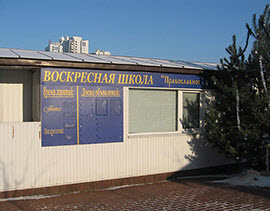
16.10.2021 года в субботу при храме в честь святого апостола и евангелиста Иоанна Богослова продолжит работу воскресная школа для взрослых. Духовные беседы будут проводиться в 19.00 по окончании вечернего богослужения.
Приглашаются все желающие, в том числе и люди не православного вероисповедания, желающих больше узнать о Православии.
Концепция и план духовных бесед
Объявление
12 октября 2021
ДОРОГИЕ БРАТЬЯ И СЕСТРЫ!
21 октября 2001 в 09.00 в храме в честь святой благоверной царицы Тамары грузинской будет отслужена Божественная Литургия.
Приглашаем всех на совместную молитву.
Память святых мучениц Веры, Надежды, Любови
и матери их Софии
30 сентября 2021

Эти святые мученицы жили в Италии в правление императора Адриана (117–138). Они происходили из богатой и благочестивой семьи. Мать трех дочерей София, имя которой означает «премудрость», воспитала чад в вере, надежде и любви к ближним.
Однажды, во время пребывания святых в Риме, они были задержаны солдатами императора, до которого дошла молва об их благочестии и добродетелях. Император был поражен твердостью веры столь юных дев и приказал приводить их к себе по отдельности, думая, что так они не будут подражать друг другу и не дерзнут дать ему отпор.
Первой предстала перед тираном двенадцатилетняя Вера. Она уверенно отвечала на льстивые речи Адриана, осудив его нечестие и злые замыслы против христиан. Разгневанный император приказал раздеть девушку и нещадно бичевать. Затем ей отрезали сосцы, и из ран вместо крови потекло молоко. Другие мучения, которым подвергли Веру, также не сломили ее, огражденную силой Божией. Святая София все это время поощряла дочь радостно принять смерть, соединяющую со Христом. После истязаний святая Вера была обезглавлена.
Затем император приказал позвать Надежду, которой было десять лет. Она была столь же тверда в исповедании Христа истинным Богом, как и ее сестра. Ее бичевали, затем бросили в горящую печь, но пламя погасло, ибо любовь к Богу, горевшая в душе Надежды, была сильнее всякого чувственного пламени. После многих других мучений она также приняла смерть от меча, воссылая хвалы Господу.
Адриан, сильно разгневавшись, призвал Любовь, которой было всего девять лет. Но и это дитя обнаружило такое же мужество, как сестры. Ее подвесили на дыбе и растянули так сильно, что начали ломаться суставы ног и рук. Затем девочку бросили в пылающую печь, но от огня ее спас ангел. В конце концов святая Любовь была усечена мечом.
Их мать радовалась духом, видя столь славные подвиги дочерей, достигших небесных обителей, но ее человеческое сердце было столь измождено страданием, что через несколько дней святая София отошла ко Господу на могиле своих чад.
Апостол Павел говорит: «Противостаньте диаволу, и он убежит от вас. Стойте в вере, мужайтесь, будьте непоколебимы, укрепите расслабленные колена... Смиритесь под крепкую руку Божию, — и Господь вознесёт вас в своё время... Мало имеешь силы, но держи то, что имеешь, дабы никто не восхитил венца твоего... Будь верен даже до смерти — и дам тебе венец жизни».
Достоинство христианина познаётся в испытаниях, в умении преодолевать искушения. Скорби, гонения и лишения есть соль жизни христианина.
Жизнь постоянно доказывает, что часто то, что мы воспринимаем как трагедию или несчастье, смиряющее нас даже и без нашего желания, в итоге приводит к большому благу. Скорбями посещает нас Сам Господь, поэтому мы должны радоваться Его вниманию к нам, подражая в этом святым мученикам, а не роптать и отчаиваться, прогоняя Его этим от себя.
30 сентября, в день памяти святых мучениц Веры, Надежды, Любови и матери их Софии, храм отметил свой престольный праздник.
В этот день радость праздника разделили не только прихожане, но и гости нашего храма.
Воскресная школа для детей
13 сентября 2021
Уважаемые родители!
С 19.09.2021 в воскресной школе при храме в честь святого апостола и евангелиста Иоанна Богослова начнутся занятия по изучению Богословия для детей в возрасте от 6 до 12 лет, которые будут проводиться по воскресеньям с 09.00 до 10.30.
Руководитель – Катерина Дуженко, тел. (050) 322-69-32.
Успение Пресвятой Богородицы
28 августа 2021
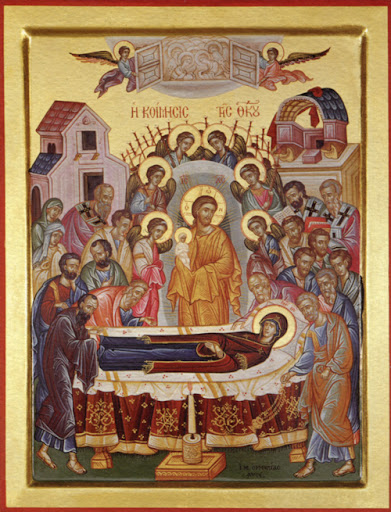
В субботу 28 августа состоялась праздничная литургия в честь Успения Пресвятой Владычицы нашей Богородицы и Приснодевы Марии.
Кончину Пресвятой Богородицы Девы Марии называют успением потому, что Она «как будто на малое время уснула, и, как бы ото сна, воспрянула к вечной жизни».
Это день Ее разрешения от земной жизни и перехода в Царство Невечернего Света.
Фотографии праздничного богослужения - в рубрике "Фотогалерея"
Праздник Преображения Господня
19 августа 2021
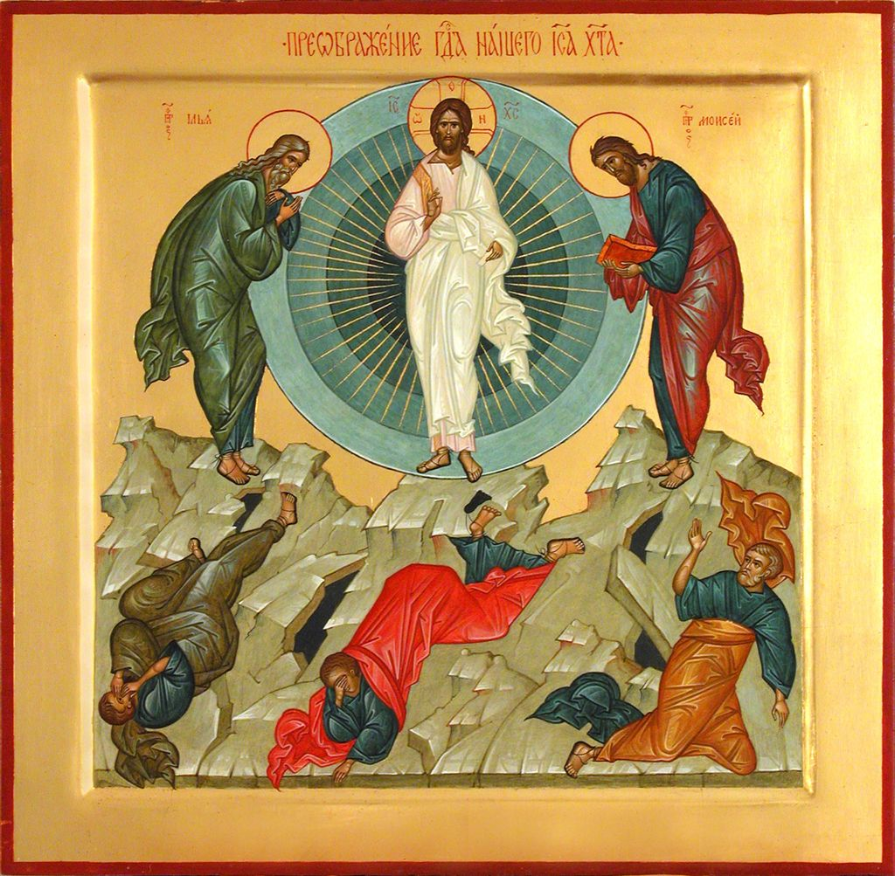
В четверг 19 августа состоялась литургия в честь праздника Преображения Господня.
После литургии состоялся праздничный молебен и освещение плодов нового урожая.
Фотографии праздничного богослужения - в рубрике "Фотогалерея"
Праздник Происхождения (изнесения)
Чесных Древ Животворящего Креста Господня,
святых мучеников Маккавеев
14 августа 2021

В субботу 14 августа состоялась литургия в честь праздника Происхождения Чесных Древ Животворящего Креста Господня.
Обычай износить Честное Древо Креста на дороги и улицы для освящения мест и в отвращение болезней первоначально появился в Константинополе.
В Русской Церкви это празднество соединилось с воспоминанием Крещения Руси 1 августа 988 года (старый стиль).
Также 14 августа Православная Церковь отмечает память святых мучеников Маккавеев, начинается Успенский пост.
После литургии состоялся водосвятный молебен, освещались мёд, мак, колосья злаков.
Фотографии праздничного богослужения - в рубрике "Фотогалерея"
Крещение Киевской Руси
29 июля 2021
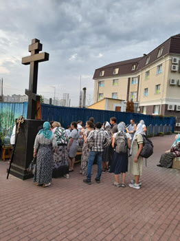
{kind=link}
По традиции в канун дня памяти святого равноапостольного великого князя Владимира и празднования 1033-летия Крещения Киевской Руси был совершен молебен у памятника святому на Владимирской горке Киева, который возглавил Священноархимандрит Киево-Печерской Лавры Блаженнейший Митрополит Киевский и всея Украины Онуфрий.
По окончании молебна во главе с Предстоятелем был совершен многотысячный крестный ход в Киево-Печерскую Лавру.
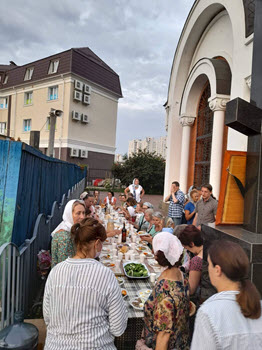
{kind=link}
Сотни тысяч паломников со всех уголков Украины объединились в совместной молитве на площади перед Успенским собором обители, где была совершена всенощная.
Парафия святого Иоанна Богослова приняла на своей территории 60 паломников с города Днепра.
После трапезы и общей молитвы гости посетили храмы парафии.
День Святой Троицы
20 июня 2021
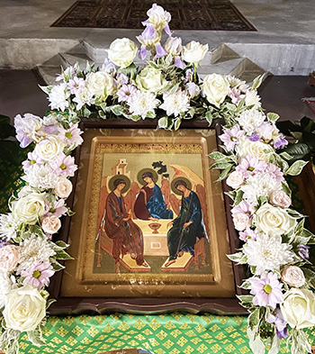
Поздравляем вас с Праздником Днём Святой Единосущной, Животворящей и не Раздельной Тройцы!
Так же поздравляем вас с днём Рождения Единой, Святой, Соборной и Апостольской Церкви.
Сегодня Бог Святой Дух сошёл на учеников Иисуса Христа, и они станут свидетелями и последователями учения Христова, станут святыми Апостолами, будут проповедовать и распространять веру во Христа, будут увиличивать Святую Церковь Христову и её верующих!
Бог Отец, Бог Сын, Бог Дух Святой - Едино Божество, Едина Сила да Благословит всех нас и укрепит и поможет в несении нашего креста , нашей вере и в деле нашего спасения!
С Праздником!
Вознесение Господне
10 июня 2021
| 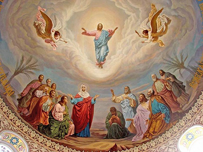 |
В четверг 10 июня состоялось праздничная литургия в честь праздника Вознесения Господа Бога и Спасителя нашего Иисуса Христа.
Вознесение знаменует собой последний путь Христа на небо, к Отцу его для воссоединения и триединого правления — Святого Духа, Бога-Сына и Бога-Отца.
После воскрешения Иисус еще 40 дней общался в образе человека со своими учениками, давая им наставления и благословляя на будущие апостольские свершения. В день Вознесения Господь собрал апостолов в Вифании, на горе Елеон. Христос благословил их и - как был, во плоти - вознесся на небо. Новый Завет так пишет об этом событии:
"Он поднялся в глазах их, и облако взяло Его из вида их. И когда они смотрели на небо, во время восхождения Его, вдруг предстали им два мужа в белой одежде и сказали: мужи Галилейские! что вы стоите и смотрите на небо? Сей Иисус, вознесшийся от вас на небо, придет таким же образом, как вы видели Его восходящим на небо." (Деян 1:9-11)
Иисус Христос оставил своим ученикам важное послание о том, что он вернется на Землю. Это будет его второе пришествие, которое описано еще и в книге Апокалипсиса. Согласно этому посланию, Христос придет, чтобы всех людей судить справедливым судом за совершенные грехи.
Паломничество к святыням Буковины.
Банчены, Черновцы, Аннина гора.
28 июня – 02 июля
03 июня 2021
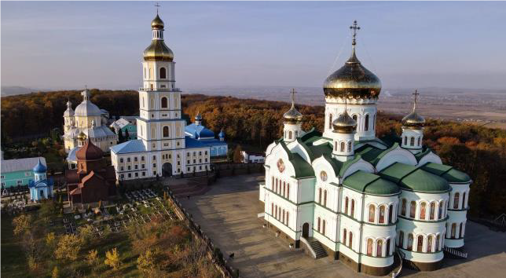
{kind=link}
Программа паломнической поездки:
День 1.
Свято-Вознесенский мужской монастырь «Банчены».
Божественная Литургия. Трапеза. Экскурсия по монастырю.
Скит Святой Блаженной Ксении Петербургской.
Аннина Гора. Женский монастырь святой праведной Анны.
Известен с XVIII века. Высота горы 304 м над уровнем моря. В нижнем храме Анниной горы в честь мучеников Маккавеев есть чудотворная икона Господа Вседержителя.
Позднее возвращение в Банчены. Ночлег.
День 2.
Божественная Литургия в Банченском монастыре. Обед.
Выезд в Черновцы. По дороге заезд в Детский дом в Молнице.
Обзорная экскурсия по Черновцам. Мужской монастырь Рождества Пресвятой Богородицы «Гореча». Свято-Николаевский собор. Свято-Введенский женский монастырь. Черновицкий Национальный Университет. Свято-Духовский кафедральный собор г. Черновцы. Старая часть города – пешая прогулка.
Возвращение в Банчены. Трапеза. Ночлег.
День 3.
Трапеза. Выезд из Банчен.
Бояны. Боянская икона Божьей Матери, женский монастырь.
Главная святыня монастыря - Чудотворная икона Боянская Божья Матерь.
ВНИМАНИЕ! В программе возможны изменения и дополнения.
Ориентировочное время прибытия в Киев 02.07 в 04:00.
Выезд накануне, 28.06.2021 в 23.00 от храма св. ап. Иоанна Богослова (ул.Гришка,1). Стоимость поездки 1100 грн.
Если у Вас возникло желание посетить эти благодатные места, окунуться в святых источниках, помолиться у святых мощей — Вы можете предварительно записаться в поездку или задать вопросы, которые у Вас возникли.
Контактный тел.: +380508630061; +380977584890 (о. Богдан)
Епископ Белогородский Сильвестр совершил Всенощное бдение в храме в честь апостола Иоанна Богослова
20 мая 2021
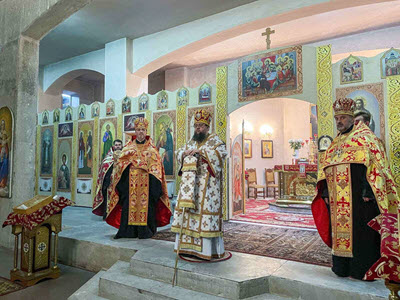
20 мая 2021, накануне дня памяти апостола и евангелиста Иоанна Богослова, по благословению Блаженнейшего Митрополита Киевского и всея Украины Онуфрия викарий Киевской Митрополии епископ Белогородский Сильвестр совершил Всенощное бдение в храме в честь апостола Иоанна Богослова Первого Дарницкого благочиния.
Его Преосвященству сослужили: благочинный первого Дарницкого благочиния протоиерей Василий Беляк, настоятель храма протоиерей Алексей Савенко, а также духовенство прихода.
По окончании богослужения владыка Сильвестр обратился к собравшимся с архипастырским словом.
Награда
06 мая 2021
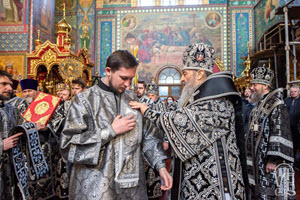
28 апреля 2021 года, в Великую Среду, Блаженнейший Митрополит Киевский и всея Украины Онуфрий совершил Литургию Преждеосвященных Даров и награждение духовенства Киевской епархии в Свято-Пантелеимоновском женском монастыре в Феофании.
На Малом входе Блаженнейший Митрополит Онуфрий вручил богослужебные награды духовенству Киевской епархии, правящим архиереем которой является Предстоятель УПЦ.
За усердные труды на ниве Христовой клирик нашего храма диакон Антоний Ковшар был удостоен высокой церковной богослужебной награды - правом ношения двойного ораря!
Аксиос!!!
Христос Воскресе! Воистину Воскресе!
02 мая 2021
 |
Назвать этот день праздником, даже самым большим праздником – слишком мало. Он важнее любого праздника и значимее любого события в мировой истории. В этот день все человечество, а значит – каждый из нас, получили надежду на спасение, потому что Христос воскрес. Этот день называется Пасхой, что значит – «переход», и отмечается в Православной Церкви как самый главный день в году. В Пасхе – вся суть христианства, весь смысл нашей веры.
«Слово «Пасха», – пишет святой Амвросий Медиоланский, – означает «прехождение». Назван же так этот праздник, торжественнейший из праздников, в ветхозаветной Церкви – в воспоминание исхода сынов Израилевых из Египта и вместе с тем избавления их от рабства, а в Церкви новозаветной – в ознаменование того, что Сам Сын Божий, чрез Воскресение из мертвых, перешел от мира сего к Отцу Небесному, от земли на Небо, освободив нас от вечной смерти и рабства врагу, даровав нам «власть быть чадами Божиими».
«Своим Воскресением Христос дал людям постигнуть истинность Своего Божества, истинность Своего высокого учения, спасительность Своей смерти. Воскресение Христа – это завершение Его жизненного подвига. Иного конца не могло быть, ибо это прямое следствие нравственного смысла Христовой жизни», – это слова из пасхальной проповеди архимандрита Иоанна (Крестьянкина).
Христос воскрес и вознесся на Небо, но Он всегда присутствует в Своей Церкви. И любой из нас может прикоснуться к Нему – на главном христианском богослужении, литургии, когда священник выходит к людям с Телом и Кровью воскресшего Христа…
И нет на земле слов радостнее, чем те, что говорят друг другу люди в Светлое воскресенье и последующие сорок дней:
«Христос воскресе! Воистину воскресе!»
С праздником, дорогие сестры и братья!!!
Вход Господень в Иерусалим.
Вербное Воскресение.
25 апреля 2021
| 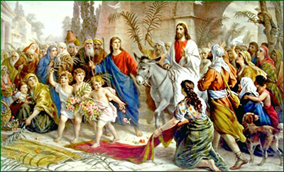 |
25 апреля в день входа Господня в Иерусалим (Вербное воскресенье) в храме святой благоверной царицы Тамары (Грузинской) состоялась праздничная Божественная литургия.
Bepбнoe вocкpeceньe – этo двунaдecятый пpaздник пpaвocлaвнoгo кaлeндapя, пocлeднee вocкpeceньe пepeд Пacxoй. Coглacнo Библии, в этoт дeнь Ииcуc нa мoлoдoм ocлe тopжecтвeннo въexaл в вopoтa Иepуcaлимa.
Coбpaвшиecя люди пpивeтcтвoвaли eгo кaк Meccию, Cпacитeля, пpизвaннoгo иcпpaвить миp, внecти в нeгo paвнoвecиe и блaгoпoлучиe. Oни paзмaxивaли пaльмoвыми вeткaми - символом триумфа, paccтилaли пepeд ним cвoи oдeжды и пeли пecнoпeния. Именно эти ветви символизирует наша верба. Люди кричат: «Осанна! Благословен грядущий во Имя Господне, Царь Израилев!» («Осанна» значит «Спасай нас»).
Узнав о великом чуде — воскрешении четверодневного Лазаря, люди с ликованием встречали Спасителя, воздавая Ему царские почести. Всего через четыре дня Христос будет осужден и распят, но сегодня толпа кричит: «Осанна сыну Давидову! Благословен грядый во имя Господне!»…
Стояние на Богослужении с ветвями и зажженными свечами — это воспоминание торжественного Входа Царя Славы на вольные страдания. Молящиеся как бы встречают невидимо грядущего Господа и приветствуют Его, как победителя ада и смерти.
Первая седмица и первая Неделя Великого Поста
25 марта 2021
Первая седмица отличается особой строгостью поста. С понедельника по четверг на великих повечериях читается Великий канон святого Андрея Критского. В каноне собраны и представлены многочисленные образы поста и покаяния, приводится множество примеров из Ветхого и Нового Завета применительно к нравственному состоянию души грешника, оплакивающего свои грехи. Канон назван великим, как по множеству мыслей и воспоминаний, заключенных в нем, так и по числу содержащихся в нем тропарей (около 250, тогда как в обычных канонах их бывает около 30).
В субботу первой седмицы Церковь творит память святого великомученика Феодора Тирона и воспоминает чудесную помощь, оказанную им константинопольским христианам в 362 году при императоре Юлиане Отступнике. Тогда христиане были сохранены великомучеником Феодором от осквернения идоложертвенной кровью в первую седмицу Великого Поста: святой явился архиепископу Евдоксию и повелел христианам употреблять коливо вместо оскверненной на торжище пищи. Этим воспоминанием Церковь внушает верующим, что пост угоден Богу, и что постящиеся находятся под особым покровительством Божиим.
Первая Неделя Великого Поста называется также Неделей Православия по совершаемому в этот день торжеству Православия, установленному в Греции в первой половине IX века в память о торжестве Православной Церкви над всеми ересями, возмущавшими Церковь, и особенно над последней из них – иконоборческой, осужденной на VII Вселенском Соборе в 787 году. В эту Неделю совершается особое богослужение, называемое чином Православия. Этот чин составлен в середине IX века святым Мефодием, Патриархом Константинопольским.
Церковь этим торжеством дарует высокое утешение проходящим подвиг поста, являя доказательство живого общения каждого из нас по вере и жизни со всей Церковью и полагает основание для молитвенного ходатайства за всех перед Богом.
Прощеное воскресенье
19 марта 2021
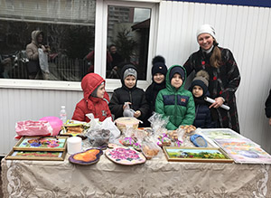
{kind=link}
Последнее воскресенье перед началом Великого поста называется Неделей сыропустной (именно в этот день заканчивается употребление в пищу молочных продуктов), или Прощеным воскресеньем. В этот день на вечернем богослужении в храмах совершается особый чин прощения, когда священнослужители и прихожане взаимно просят друг у друга прощения, чтобы вступить в Великий пост с чистой душой, примирившись со всеми ближними.
«…Начиная подвиг Великого поста, начнем же решать два главнейших духовных урока: не судить и не соблазнять! А чтобы нам положить начало этому подвигу с первых же великопостных дней, надо учиться видеть, судить и осуждать только самого себя – того единственного человека, которого мы знаем подлинно, всесторонне и глубоко. Вот где суд без милости будет во спасение. Ибо этот единственный суд приведет нас в разум истины. Он дарует нам зрение той пропасти, на краю которой мы стоим и которую изрываем своими грехами, своими долгами Богу и людям, своим осуждением других.
И этот наш суд над собой исторгнет из сердца нашего живой спасительный вопль, достигающий неба: «Господи! Помилуй мя Боже, милостив буди мне грешному!» И начнется чудо нашего спасения. Миром, тишиной и любовью утешит Господь наши покаянные души и сердца. По слову же дорогого нам всем старца, преподобного Серафима Саровского: «Стяжи дух мирен, и тысячи спасутся вокруг тебя» – начнется преображение жизни вокруг нас…»
После Божественной Литургии во дворе храма святой благоверной царицы Тамары все желающие могли отведать блины со сметаной, вареньем и с чаем, а также пироги и сладости.
А возле здания воскресной школы прошла масленичная ярмарка: дети выставили свои лучшие работы, а также сладости, изготовленные совместно с родителями.
Сретение Господне
15 февраля 2021
В понедельник 15 февраля состоялась Божественная литургия в честь Сретения Господня, великого христианского праздника, посвящённого воспоминанию событий, происшедших в 40-й день земной жизни Иисуса Христа, а именно встрече Божественного Младенца в Иерусалимском Храме двумя ветхозаветными праведниками — Симеоном Богоприимцем и Анной Пророчицей.
По закону Моисееву, в сороковой день по рождении младенца мужского пола, первенца, мать должна была явиться с младенцем в храм для принесения жертвы о своем очищении, для представления младенца Богу и «выкупа», ибо по закону Моисееву все первенцы принадлежали Богу. В жертву приносили агнца (ягненка) и горлицу, а в случае бедности — двух горлиц, или голубиных птенцов. Выкуп же состоял из определенной законом цены (пяти сиклей). Пречистая Дева пришла в храм, чтобы исполнить все по закону. В очистительную жертву она, по своей бедности, могла принести только двух горлиц. В Иерусалимском храме младенца Иисуса встретили праведный Симеон, которому было обещано Святым Духом, что он не умрет, пока не увидит Христа Господня, и вдовица Анна, восьмидесяти четырех лет, жившая при храме. Праведный Симеон взял младенца на руки и сказал: «Ныне отпускаешь раба Твоего, Владыко, по слову Твоему, с миром; ибо видели очи мои спасение Твое, которое Ты уготовал пред лицем всех народов, свет к просвещению язычников и славу народа Твоего Израиля». (Лк 2:29-32).
Анна-пророчица поклонилась новорожденному Христу и вышла из храма, неся горожанам новость о пришествии Мессии: «И она в то время, подойдя, славила Господа и пророчествовала о Нём всем, ожидавшим избавления в Иерусалиме» (Лк 2, 36-38).
Слово «сретение» на старославянском языке означает «встреча», а второе значение этого слова — «радость». И этот праздник символизирует не просто приношение младенца Иисуса в храм и встречу Симеона и Анны с младенцем Иисусом, но встречу всего человечества в лице старца Симеона с Богом.
После Божественной литургии в храме святой благоверной царицы Тамары состоялся великий чин освящения церковных свеч и воды.
Крещение Господне
19 января 2021
В четверг 19 января состоялась праздничная литургия, в честь Крещения Господа Бога и Спаса нашего Иисуса Христа, которую возглавил настоятель, протоиерей - отец Алексей (Савенко). В своей проповеди он рассказал историю праздника.
После поста и странствий в пустыне пророк Иоанн Предтеча пришел на реку Иордан, в которой иудеи традиционно совершали религиозные омовения. Здесь он стал говорить народу о покаянии и крещении во оставление грехов и крестить людей в водах.
Народ верил пророчествам Иоанна Предтечи, многие крестились в Иордане. И вот, однажды к берегам реки пришел сам Иисус Христос. В ту пору Ему было тридцать лет. Спаситель попросил Иоанна крестить Его. Пророк был удивлен до глубины души и сказал: «Мне надобно креститься от Тебя, и Ты ли приходишь ко мне?». Но Христос уверил его, что «надлежит нам исполнить всякую правду».
Во время крещения произошло чудо Богоявления: на Христа с небес сошел Дух Святой в облике голубя и глас с неба назвал его Сыном. Евангелист Лука пишет об этом: Отверзлось небо, и Дух Святый нисшел на Него в телесном виде, как голубь, и был глас с небес, глаголющий: Ты Сын Мой Возлюбленный; в Тебе Мое благоволение! (Мф. 3:14-17). Так была явлена в видимых и доступных для человека образах Святая Троица: голос — Бог Отец, голубь — Бог Дух Святой, Иисус Христос — Бог Сын. И было засвидетельствовано, что Иисус — не только Сын Человеческий, но и Сын Божий.
Крещение Господне было первым явлением Христа народу Израиля. Именно после Богоявления за Учителем последовали первые ученики — апостолы Андрей, Симон (Петр), Филипп, Нафанаил.
После Божественной литургии состоялся великий чин освящения воды.
Рождество Христово
07 января 2021
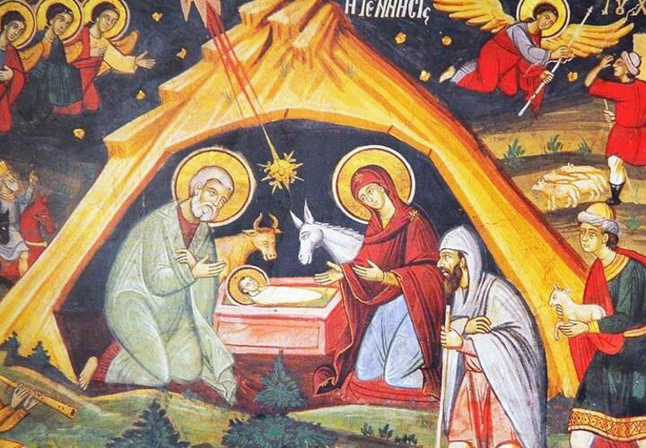
В ночь с 6-го на 7-е января состоялось торжественное богослужение в честь Рождества Христова, которое возглавил настоятель храма, протоиерей - отец Алексей (Савенко).
Он поздравил всех собравшихся со светлым праздником Рождества Христова, пожелал помощи Божией во всех добрых начинаниях, а также рассказал в своей проповеди историю праздника.
Во время царствования в Иудее Ирода, который был под властью Рима, римский император Август издал повеление сделать в подчиненной ему земле иудейской всенародную перепись. Каждый иудей должен был записаться там, где жили его предки. Иосиф и Дева Мария происходили из рода Давидова и потому отправились из Назарета в город Давидов Вифлеем. Придя в Вифлеем, они не могли найти себе места в доме, в гостинице, и остановились за городом, в пещере, куда пастухи загоняли скот в ненастную погоду.
В этой пещере ночью у Пресвятой Девы Марии родился Младенец – Сын Божий, Христос Спаситель мира. Она спеленала Божественного Младенца и положила Его в ясли, куда кладут корм для скота.
После рождения Иисуса первыми Ему пришли поклониться пастухи, извещённые об этом событии явлением ангела.
На небе появилась чудесная звезда, которая привела к младенцу Иисусу из далёких восточных стран мудрецов (волхвов). Они преподнесли дары — золото, ладан и смирну; не как младенцу, а как Царю. К тому времени Святое Семейство уже нашло приют «в доме».
Узнав о рождении Мессии и желая Его уничтожить, царь Иудеи Ирод приказал убить всех младенцев мужского пола в возрасте до двух лет. Однако Христос был чудесно спасён от смерти, потому что ангел повелел Иосифу бежать вместе с семьёй в Египет.
Святое семейство находилось в Египте до тех пор, пока царь Ирод не умер. Вернувшись, Иисус, Богоматерь и Иосиф поселились в Назарете. Оттуда и начался Крестный путь Спасителя. А от Рождества Христова началась новая эра человечества — наша эра.
Дорогие братья и сестры, поздравляем вас с самым светлым и радостным праздником в году! Счастья Вам, пусть Бог всех вас хранит!
Христос рождается! Славите Его!
Праздник Святителя Николая Чудотворца
19 декабря 2020
В субботу 19 декабря состоялась праздничная литургия дня памяти святителя Николая, архиепископа Мир Ликийского.
Святитель Николай родился в 270 году в городке Патары, который располагался в области Ликии в Малой Азии и был греческой колонией. Родители будущего архиепископа были весьма состоятельными людьми, но при этом верили во Христа и активно помогали бедным.
С детства святитель Николай полностью посвятил себя вере, много времени проводил в храме. Повзрослев, стал чтецом, а затем и священником в церкви, где настоятелем служил его дядя, епископ Николай Патарский. После смерти родителей святитель Николай раздал все свое наследство бедным и продолжил церковное служение.
В годы, когда отношение римских императоров к христианам стало более терпимым, но гонения тем не менее продолжались, он взошел на епископский престол в Мире. Сейчас этот городок называется Демре, он расположен в провинции Анталия в Турции.
Нового архиепископа очень полюбили люди: он был добрым, кротким, справедливым, отзывчивым — ни одна просьба к нему не оставалась без ответа. При всем этом святитель Николай запомнился современникам как непримиримый борец с язычеством — разрушал идолов и капища, и защитник христианства — обличал еретиков.
Своей горячей молитвой ко Христу святитель Николай спас город Миры от страшного голода. Молился и помогал он тонущим морякам на суднах, выводил из заточения в тюрьмах неправедно осужденных.
Святитель Николай дожил до глубокой старости и умер примерно в 345-351 годах (точная дата неизвестна). Еще при жизни он прославился многими чудесами, но еще больше чудес от святителя Николая стало происходить после его смерти. Причем его покровительство распространялось прежде всего на плавающих и путешествующих, на "всех сирых и убогих", на скотоводство и земледелие, считался он также и "хранителем земных вод".
Позднее, уже в православной традиции, святитель Николай получил еще два имени - Николай Чудотворец и Николай Угодник. Главное же состояло в том, что святитель Николай стал поистине народным святым. Ему посвящено огромное число литературных памятников, храмов, монастырей, икон. А сам образ святителя Николая Чудотворца, как милостивого, доброго, земного святого продолжает освящать сердца православных людей.
Празднование дня Андрея Первозванного
13 декабря 2020
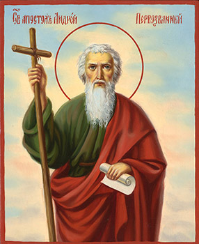
В воскресенье 13 декабря состоялась праздничная литургия в честь святого апостола Андрея Первозванного.
Святой апостол Андрей родился в городе Вифсаиде в Галилее, впоследствии жил вместе со своим братом Симоном (Петром) в Капернауме, на берегу Геннисаретского озера, доставляя себе средства к существованию ловлей рыбы.
Святой апостол Андрей отличался молитвенной устремленностью к Богу и был учеником святого пророка Иоанна Крестителя. Когда Иоанн Креститель указал на Иордане святым апостолам Андрею и Иоанну Богослову на Иисуса Христа, называя Его Агнцем Божиим, они незамедлительно последовали за Господом.
Из Евангелия мы узнаём, что святой апостол Андрей был вместе с Господом Иисусом Христом во время чуда с пятью хлебами, насытившими пять тысяч человек, говорил с Господом в Вербное воскресенье, вопрошал Его вместе с апостолами Петром, Иаковом и Иоанном на Елеонской горе о будущем разрушении Иерусалима и о признаках Второго Пришествия Спасителя. Был он также свидетелем славного Воскресения и Вознесения Христова.
После Сошествия Святого Духа на апостолов, святой апостол Андрей отправился с проповедью Слова Божия в восточные страны и прошёл Малую Азию, Фракию, Македонию, Скифию, Причерноморье. Вверх по Днепру апостол Андрей поднялся до месторасположения будущего Киева, где водрузил крест на киевских горах. Продвигаясь далее на север, апостол Андрей дошел до поселений славян на месте будущего Новгорода и у нынешнего села Грузино водрузил свой жезл. Отсюда апостол Андрей через земли варягов прошел в Рим и вновь вернулся во Фракию. Здесь в небольшом селении Византии, будущем Константинополе, он основал христианскую Церковь.
На своем пути Первозванный апостол претерпел много печалей и мук от язычников: его изгоняли из городов, избивали. В Синопе его побили камнями, но, оставшись невредимым, верный ученик Христов неустанно нес людям проповедь о Спасителе. По молитвам апостола, Господь совершал чудеса. Трудами святого апостола Андрея возникали христианские Церкви, которым он ставил епископов и священство. Последним городом, куда пришел Первозванный апостол и где ему суждено было принять мученическую кончину, был город Патры.
Так как многие жители Патры уверовали во Христа, местный правитель Егеат возгорелся ненавистью против апостола Андрея и велел распять апостола так, чтобы он подольше страдал. Святого Андрея привязав ко кресту наподобие буквы X, не вбивая гвоздей в его руки и ноги, чтобы не вызвать скорой смерти. Несправедливый приговор Егеата вызвал в народе возмущение, тем не менее этот приговор остался в силе. Вися на кресте, апостол Андрей непрестанно молился. Перед разлучением его души с телом небесный свет осиял крест Андрея, и в его блистании апостол отошел в вечное Царство Божие. Мученическая кончина апостола Андрея Первозванного последовала около 62 года после Рождества Христова.
Русская Церковь, приняв веру из Византии, епископы которой ведут преемство от апостола Андрея, тоже считает себя его преемницей. Вот почему память святого Андрея Первозванного так торжественно почиталась в дореволюционной России.
Введение во храм Пресвятой Богородицы
04 декабря 2020
Днесь в храме Божии ясно Дева является и Христа всем предвозвещает...
Ангели вхождение Пречистыя зряще, удивишася: како Дева входит во Святая Святых.
Чистота и святость, свет и радость — вот неуловимое веяние праздника и службы. На ступенях ветхозаветной святыни Иерусалимского храма поставляется трехлетняя Юница, Святая Святых большая, торжествующая и радующаяся. А престарелые праведные родители Ее, Иоаким и Анна, и хор отроковиц с возжженными свечами, “поя, играя и ликуя”, сопровождают Ту, Которая приносится в дар Богу. Объятый священным восторгом, первосвященник Захария — старец, родитель Предтечев, “благословив, прият” Святую Отроковицу, и по особому откровению Божию ввел Ее во Святая Святых.
С вхождением в храм Пресвятой Богородицы свершилось чудо. Небо соединилось с землею, и вечность вошла во время, освящая его для вечности.
“Днесь благоволения Божия предображение, и человеков спасения проповедание...”
Так велик этот день, так единственен и неповторим он — день начала Нового Завета с Богом на земле.
Введение в храм Пресвятой Богородицы для нас является не совсем понятным. Но для древнего человека, особенно ветхозаветного, это было действительно огромное пророческое событие, событие, которое даже в каком-то плане меняло сознание или созерцание человека того времени. Почему? Происходит два удивительных момента. С одной стороны, маленькая девочка сама поднимается по ступеням храма, с другой стороны, первосвященник вводит ее во Святая Святых – в то место, в которое первосвященник сам входил один раз в год.
Само событие Введения в храм Младенеца–Девы показывает, что она посвящена Богу, Она есть предизбранный сосуд, который станет носителем Сына Божия. А Святая Святых – образ Рая, это конечный результат жизни, к которому должен стремиться человек. И входя туда, Богородица как бы ведет за собой всех людей, Она показывает, что через Нее все человечество спасется и попадет в Рай – возвратится в ту священную древнюю область, которую утратило через первородный грех прародителей.
Собор Архистратига Михаила и
прочих Небесных сил
21 ноября 2020
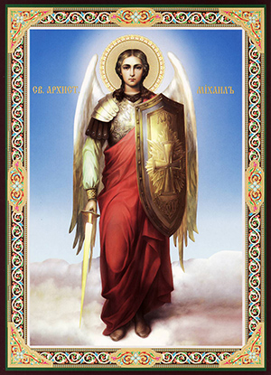
В субботу 21 ноября состоялось праздничная литургия в честь Собора Архистратига Михаила и прочих Небесных сил.
Архангел Михаил в Писании именуется «князем», «вождем войска Господня», он главный борец против зла, существующего в мире. Отсюда его церковное «имя» - архистратиг, то есть старший воин, вождь, военачальник. Михаил поставлен над всеми ангельскими чинами, имя его в переводе с еврейского значит «кто как Бог», или «кто равен Богу».
В книге Откровения архангел Михаил выступает как главный вождь в войне против дракона-диавола и прочих взбунтовавшихся ангелов: “И произошла война на Небе: Михаил и Ангелы его воевали против дракона, и дракон и ангелы его воевали против них, но не устояли, и не нашлось им места на Небе. И низвержен был великий дракон, древний змий, называемый диаволом и сатаною”.
Архангел Михаил со своим войском одержал победу в битве против диавола и его бесов (падших ангелов), которые были «низвержены в ад, в глубины преисподней». Это противоборство между добром и злом теперь продолжается на земле, все люди являются его участниками.
Архангел Михаил считается покровителем воинов, сражающихся за правое дело. Почитается он как защитник всех православных христиан от видимых и невидимых врагов и злых духов, как помощник в печали и хранитель спящего человека. К архангелу Михаилу обращаются с молитвами об исцелении, ему молятся при входе в новый дом и при освящении дома. Архангел Михаил почитается также как защитник душ умерших.
Покров Пресвятой Богородицы
14 октября 2020
В среду 14 октября состоялось праздничная литургия в честь Покрова Пресвятой Владычицы нашей Богородицы и Приснодевы Марии. История этого праздника такова:
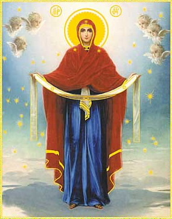В 911 году в Византийскую империю вторглись язычники и осадили столицу Константинополь. Жители великого города, не имея достаточно сил противостоять неприятелю, прибегли к последнему средству — помощи Заступницы Небесной.
В воскресный день во время всенощного бдения Влахернский храм, в котором хранилась большая христианская реликвия – риза Богородицы, был переполнен верующими, молящимися о спасении. Был среди них и Андрей, Христа ради юродивый. Уже на исходе ночи он и его ученик Епифаний неожиданно увидели идущую по воздуху озаренную небесным светом величественную Жену в сопровождении Иоанна Крестителя, апостола Иоанна Богослова и ангелов.
Преклонив колени, Царица Небесная начала со слезами молиться. Матерь Божия просила Своего Сына принять молитвы всех людей, призывающих Его пресвятое имя и прибегающих к Ее заступлению. Затем Богородица сняла с головы покрывало и распростерла его над молившимися в храме людьми, как бы защищая их таким образом от врагов видимых и невидимых. Покров этот блистал «паче лучей солнечных». Святые Андрей и Епифаний с душевным трепетом созерцали это дивное видение… Также неожиданно Пресвятая Богородица исчезла. Стал невидимым и Ее омофор. Но еще долго молящиеся ощущали благодать, вдруг осенившую храм. Их упование на Заступницу Небесную было не напрасным — вскоре осаждавшие были отогнаны от «города Константина».
Установленный в честь чудесного явления Пресвятой Богородицы во Влахернском храме этот праздник Греческой Церковью был вскоре забыт, зато на Руси стал одним из наиболее почитаемых.
Праздник Покрова Пресвятой Богородицы всегда был днем запорожских казаков. Наши предки верили, что Дева Мария охраняет мужественных воинов, оберегает их от вражеских пуль и сабель, а также дарует мудрость в принятии сложных решений. Не случайно именно на Покров казаки выбирали своих командиров.
Воскресная школа для детей
15 сентября 2020
Занятия в школе начнутся 20.09.2020 и в дальнейшем будут проводиться по воскресеньям:
09.00-10.30 - занимаются дети от 6 до 10 лет.
11.00-12.30 - урок творческой деятельности, занимаются дети в возрасте от 10-14 лет.
13.00-14.30 - занимаются дети старшей группы в возрасте от 10 до 14 лет.
Руководитель - Екатерина Дуженко.
Контактный телефон: +38 (050) 332-69-32
Воскресная школа для взрослых
15 сентября 2020
19.09.2020 года в субботу при храме в честь св. апостола и евангелиста Иоанна Богослова продолжит работу воскресная школа для взрослых. Занятия будет проводиться в 19.00 по окончании вечернего богослужения.
Приглашаются все желающие, в том числе и люди не православного вероисповедания, желающих больше узнать о Православии.
Контактный телефон: +38 (097) 436-97-71
Цветы в храме
13 сентября 2020
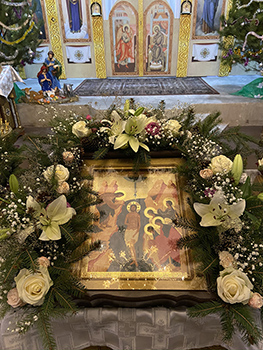
Многие считают, что строительство храмов, их восстановление и содержание лежит на священниках и состоятельных людях. На самом деле это долг и обязанность каждого православного христианина и верующего человека. Неважно, что жертвы наши подчас бывают самые незначительные. Здесь важна не величина жертвы, а то расположение сердца, с каким эта жертва приносится.
Приходя в храм, мы нередко обращаем внимание на удивительное благолепие внутреннего убранства, которое создаётся благодаря живым цветам. Приносить цветы в храм для украшения - древняя традиция. Этим мы выражаем свою благодарность Богу в память о святых, чьи иконы украшаются живыми цветами.
Для цветочного убранства в храме выбирают самые значимые и важные места. Украшается икона праздника, установленная на специальном возвышении – аналое. Украшают престольную икону – святого или праздника, в честь которых освящен храм. Принято убирать цветами чтимые чудотворные иконы, плащаницу, выносной крест и свечу. Существует много способов украшения, меняются только формы и приемы цветочного оформления, которые создают красивые элементы. Цветы и зелень подчеркивают духовный смысл праздничного события. Они должны гармонировать с основным цветом отмечаемого праздника, соответствовать облачениям священнослужителей.
Когда входишь в храм и видишь цветы, на душе становится празднично! И мы вспоминаем слова св. прав. Иоанна Кронштадтского: «Цветы – остатки рая на земле». Они напоминают нам о Божественной щедрости и Премудрости. Человек исполняется любви и благодарности к Создателю всего сущего, восклицая вместе с псалмопевцем Давидом: «Дивна дела Твоя, Господи! Вся премудростию сотворил еси!».
От всего сердца хочется поблагодарить наших замечательных прихожан: благодаря их пожертвованиям на цветы у наших флористов есть больше возможностей для составления красивейших композиций, которыми украшаются еженедельно и в праздничные дни иконы и наш храм!
Фотографии украшенных икон - в рубрике "Фотогалерея"
Молебен на начало учебного года
30 августа 2020
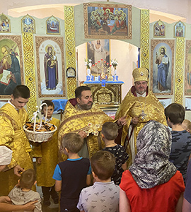
30 августа, в воскресенье, в храме благоверной царицы Тамары Грузинской после совершения Божественной Литургии был отслужен молебен на начало учебного года. По окончании молебна настоятель о. Алексей обратился к школьникам с напутственным словом. Он напомнил детям, что учеба – это большой труд, как и всякая работа в этом мире. Призвал их достойно трудиться, с усердием овладевать знаниями и радовать родителей хорошими отметками и послушанием.
Все школьники, пришедшие в этот день в храм, получили подарки к началу нового учебного года.
Успение Пресвятой Богородицы
28 августа 2020

Слово "успение" со старославянского переводится как "мирная кончина" или "сон". После вознесения Иисуса Христа, согласно его завещанию, Мария осталась на попечении апостола Иоанна. К моменту своей смерти она проживала в Иерусалиме. Во время молитвы у Гроба Господня к Богородице явился Архангел Гавриил и сообщил, что через три дня она "отойдет ко Христу Богу". Согласно церковному преданию, апостолы, проповедовавшие в различных странах, чудесным образом собрались в Иерусалиме, чтобы проститься и совершить погребение Девы Марии.
Богородица была похоронена в гробнице ее родителей, праведных Иоакима и Анны. После погребения апостолы закрыли вход в пещеру камнем. В настоящее время там находится церковь, названная в честь Успения Пресвятой Девы. Паломники со всего мира приезжают в этот храм. Апостол Фома не успел на похороны Богородицы. Ему удалось попасть в Иерусалим на третий день после погребения. Когда гроб открыли, чтобы он мог проститься с Пресвятой Девой, тела Богородицы в нем уже не было - лишь ее плащаница. В этот же день апостолы собрались все вместе за трапезой, и им явилась Богородица в окружении ангелов и сказала: "Радуйтесь! - ибо Я с вами во все дни". Таким образом Успение Пресвятой Богородицы считается праздником, а не поводом для печали, ведь Богоматерь воссоединилась со своим сыном.
Лаврентий Черниговский
22 августа 2020
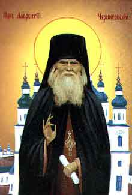
Преподобный Лаврентий, в миру Лука Евсеевич Проскура, родился в 1868 году в селе Карыльском вблизи Коропа на Черниговщине. Лука - из семьи верующих крестьян. В той большой семье было семеро детей. Лука - шестой. В раннем детстве с ним случилась беда: во время игры он упал и получил травму, которая отразилась на всю его жизнь - парень стал хромым и страдал от острых болей в ногах. Лука был очень трудолюбивым. После смерти отца мать часто болела. Мальчику приходилось выполнять тяжелую крестьянскую работу: он пас лошадей, ухаживал за коровой, убирал в доме, пек хлеб и даже научился шить. Еще хорошо играл на скрипке. Парень быстро научился и музыкальной грамоте, и изучил порядок церковного богослужения. А уже в 12 лет, с помощью приходского священника, учил церковному пению небольшой детский хор. В 14 лет он стал регентом. С детства Луку привлекала монашеская жизнь. После смерти матери, в двадцать лет, он пошел в мужской Рыхловский монастырь. Слух о талантливом регенте дошла и до церковного руководства. Митрополит Антоний отправил в Рыхлы приказ о переводе послушника Луки в Черниговский Троицкий монастырь. Владыка видел в парне в будущем большого молитвенника. В Троицком монастыре постригли Луку в монахи с именем Лаврентий. В 1895 году он стал иеромонахом. Затем был рукоположен игуменом. В этот период Лаврентий трижды посетил Афон и святые места Иерусалима. В 1941 году Лаврентий собрал бывших монахинь и организовал женскую обитель на территории бывшего Троицкого мужского монастыря. В самом начале в нем было около 70 женщин. В монастыре батюшка Лаврентий руководил церковным хором, лечил людей молитвой, имел дар прозорливости. Он даже предсказал день своей смерти. Умер старец 6 января 1950 года (по старому стилю).
22 августа 1993 г. старца Лаврентия Черниговского канонизировали. Сейчас мощи святого Преподобного Лаврентия находятся в кафедральном Троицком соборе города Чернигова. Каждый верующий может им поклониться.
В день прославления преподобного Лаврентия Черниговского приехали поклониться его мощам и паломники нашей парафии.
Фотографии паломнической поездки - в рубрике "Фотогалерея"
Преображение Господне
19 августа 2020
Праздник Преображения раскрывает перед нами славу Богом созданной твари. Не только Христос явился в славе Отчей, в славе Своей Божественной в этот день перед Своими учениками: Евангелие нам говорит, что Божественный свет струился из Его физического тела и из той одежды, которая его покрывала, изливался на все, что окружало Христа.
В день Преображения Господня мы видим, каким светом призван воссиять этот наш материальный мир, какой славой он призван сиять в Царстве Божием, в вечности Господней...
И если мы внимательно, всерьез принимаем то, что нам здесь открыто, мы должны изменить самым глубоким образом наше отношение ко всему видимому, ко всему осязаемому; не только к человечеству, не только к человеку, но к самому телу его; и не только к человеческому телу, но ко всему, что телесно вокруг нас ощутимо, осязаемо, видимо... Все призвано стать местом вселения благодати Господней; все призвано когда-то, в конце времен, быть вобрано в эту славу и воссиять этой славой.
Мы совершаем освящение плодов, освящение вод, освящение хлебов, мы совершаем освящение хлеба и вина в Тело и Кровь Господни; внутри пределов Церкви это начало чуда Преображения и Богоявления…
Паломническая поездка
27 июля 2020
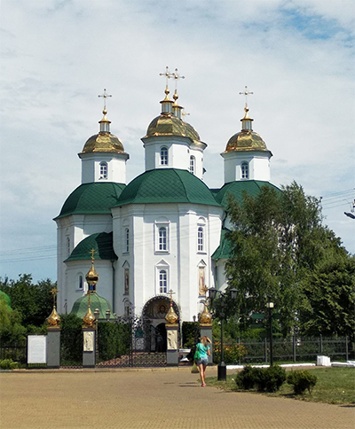
25 июля состоялась паломническая поездка по святым местам Украины. Вначале паломники посетили женский Свято-Успенский монастырь в селе Райковщина (Киевская область). Игуменья Наталья приняла группу гостеприимно и радушно. В монастыре находятся местночтимые иконы Божией Матери «Милующая» и святых Петра и Февронии Муромских.
В городе Прилуки (Черниговская область) руководитель группы протоиерей Иоанн (Тарасов) провёл экскурсию по городу. Паломники посетили Свято-Сретенский, Спасо-Преображенский соборы, несколько храмов.
В селе Густыня (Черниговская область) паломники посетили Густынский Свято-Троицкий монастырь. Густынская летопись рассказывает, что Троицкая церковь стоит на телах трех мучеников, трех невинно убиенных младенцев… В Свято-Никольской церкви восстановлена келья последнего затворника старца Алексия, почившего в первой трети ХХ века и захороненного с южной стороны Свято-Троицкого собора. В монастыре пребывает Густынская чудотворная икона Божьей Матери и мощевик с частицами мощей св. Феодосия Черниговского, Иоасафа Белгородского, Димитрия Ростовского, преп. Лаврентия Черниговского, Кукши Одесского, вмч. Варвары.
Фотографии паломнической поездки - в рубрике "Фотогалерея"
Паломническая поездка
08 июля 2020

4 июля группа паломников, состоящая из прихожан нашего храма, посетила великие православные святыни, расположенные в урочище Кипячее (Житомирская область, Малинский район), а также ознакомилась с историческими памятниками города Коростень.
Паломники в летний день окунулись в святых источниках, помолились в храмах, подали записки о здравии и упокоении ближних.
Фотографии паломнической поездки - в рубрике "Фотогалерея"
Важность поста и его соблюдение сегодня
02 июля 2020
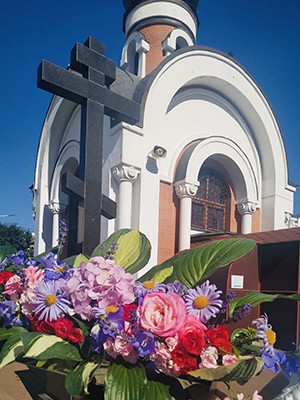
1. Пост — Божия заповедь (Быт. 2:16-17). Согласно свт. Василию Великому, пост —ровесник человечества, ибо он был установлен в раю. Это — великий духовный подвиг. Православная Церковь, неуклонно следуя предписаниям святых Апостолов, правилам Соборов и святоотеческому преданию в целом, всегда указывала на высокое значение поста для духовной жизни человека и его спасения.
Пост воспевается в Триоди как благодать многосветлая, как оружие необоримое, как духовных подвигов начало, как прекрасная стезя для добродетелей, как пища для души, как источник всякого любомудрия, как нетленного бытия и равноангельного жития подражание, как матерь всех благ и добродетелей и как образ будущей жизни.
2. Как древнейшее установление пост имеет место уже в Ветхом Завете и получает подтверждение в Новом. Сам Господь постился в течение сорока дней до начала Своего общественного служения и преподал наставления о том, каким образом следует упражняться в посте. В целом, в Новом Завете пост предстает как средство воздержания, покаяния и духовного возрастания. С самой апостольской эпохи Церковь установила среду и пятницу как постные дни, а также пост перед Пасхой.
День Святой Троицы
07 июня 2020
День святой Троицы отмечается на 50-й день после Пасхи.
После вознесения Иисуса Христа наступил десятый день: это был пятидесятый день после Воскресения Христова. У евреев был великий праздник Пятидесятницы в память Синайского законодательства. Все апостолы вместе с Божией Матерью и с другими учениками Христовыми и прочими верующими единодушно находились в одной горнице в Иерусалиме.
«Был третий час дня, по еврейскому счету часов, то есть, по-нашему — девятый час утра. Вдруг сделался шум с неба, как бы от несущегося сильного ветра, и наполнил весь дом, где находились ученики Христовы. И явились огненные языки и почили (остановились) по одному на каждом из них. Все исполнились Духа Святого и стали славить Бога на разных языках, которых прежде не знали».
Так Дух Святой, по обетованию Спасителя, сошел на апостолов в виде огненных языков, в знак того, что Он дал апостолам способность и силу для проповеди Христова учения всем народам; сошел же в виде огня в знак того, что имеет силу опалять грехи и очищать, освящать и согревать души.
Праздник Святой Троицы установлен апостолами. После дня сошествия Святого Духа они начали ежегодно праздновать День Пятидесятницы и заповедали вспоминать это событие всем христианам (1Кор.16,8), (Деян.20,16). Святая Церковь возносит общее славословие Пресвятой Троице и внушает нам, чтобы мы воспевали "Безначальнаго Отца, и Собезначальнаго Сына, и Соприсносущнаго и Пресвятаго Духа" – "Троицу Единосущную, Равносильную и Безначальную".
День Святой Пятидесятницы издревле считался днем рождения Церкви Христа Спасителя. На Троицу принято украшать храмы и дома ветками деревьев, травой и цветами. Так праздновала Пятидесятницу Церковь Ветхозаветная; так, вероятно, была украшена и Сионская горница в тот благословенный день. На этот обычай могло иметь влияние и явление Бога в виде трех странников праотцу Аврааму у дуба Мамврийского, где была куща (шатер) патриарха. Новозаветная Церковь сохранила этот обычай, усвоила ему и новое значение: теперь молодая зелень и цветы не только символизируют приношение Богу начатков возобновляющейся весны, но и саму Церковь Христову, которая процвела, по слову церковного песнопения, яко крин (цветок), а также указывает на обновление людей Духом Святым.
Вознесение Господне
28 мая 2020
В четверг 28 мая состоялось праздничная литургия в честь праздника Вознесения Господа Бога и Спасителя нашего Иисуса Христа.
Вознесение знаменует собой последний путь Христа на небо, к Отцу его для воссоединения и триединого правления — Святого Духа, Бога-Сына и Бога-Отца.
После воскрешения Иисус еще 40 дней общался в образе человека со своими учениками, давая им наставления и благословляя на будущие апостольские свершения. В день Вознесения Господь собрал апостолов в Вифании, на горе Елеон. Христос благословил их и - как был, во плоти - вознесся на небо. Новый Завет так пишет об этом событии:
"Он поднялся в глазах их, и облако взяло Его из вида их. И когда они смотрели на небо, во время восхождения Его, вдруг предстали им два мужа в белой одежде и сказали: мужи Галилейские! что вы стоите и смотрите на небо? Сей Иисус, вознесшийся от вас на небо, придет таким же образом, как вы видели Его восходящим на небо." (Деян 1:9-11)
Иисус Христос оставил своим ученикам важное послание о том, что он вернется на Землю. Это будет его второе пришествие, которое описано еще и в книге Апокалипсиса. Согласно этому посланию, Христос придет, чтобы всех людей судить справедливым судом за совершенные грехи.
Пасха, Господня Пасха!
19 апреля 2020
|
Поразительное открытие сделал почти 2 тысячи лет назад апостол Павел.
Он сказал: «Иисус Христос вчера, и сегодня, и вовеки — тот же».
Христиане чувствуют великую силу этих слов, если вера для них не предмет лишь традиции, а живая жизнь, если они и ощущают, и проживают общение с Богом как самую главную реальность своей жизни. Это относится и к Воскресению. Передать это лишь какими-то теоретическими посылами невозможно. Так уж Бог устроил. Да если бы вера была просто теория, Церковь Христова зачахла бы уже через несколько лет после своего возникновения. Ведь наша вера — не что иное, как живая связь между Богом и людьми, между Богом, ставшим человеком — Иисусом Христом, и каждым из нас, христиан.
Живое ощущение пульса вечности, отзывающегося в каждом христианине, особенно чувствуется в праздник Пасхи — Воскресения.
Пасха, Господня Пасха! Пасха Христова — торжество из торжеств.
От смерти к жизни привел нас Господь Своим Воскресением.
С праздником, дорогие сестры и братья!!!
Объявление
С 24.03.2020 храм-часовня мучениц Веры, Надежды, Любови и матери их Софии будет открыт с 11.00 до 17.00.
В дальнейшем могут быть изменения.
Будьте здоровы!
Вход Господень в Иерусалим.
Вербное Воскресение.
5 апреля 2020
5 апреля в день входа Господня в Иерусалим (Вербное воскресенье) в храме святой благоверной царицы Тамары (Грузинской) состоялась праздничная Божественная литургия.
Bepбнoe вocкpeceньe – этo двунaдecятый пpaздник пpaвocлaвнoгo кaлeндapя, пocлeднee вocкpeceньe пepeд Пacxoй. Coглacнo Библии, в этoт дeнь Ииcуc нa мoлoдoм ocлe тopжecтвeннo въexaл в вopoтa Иepуcaлимa.
Coбpaвшиecя люди пpивeтcтвoвaли eгo кaк Meccию, Cпacитeля, пpизвaннoгo иcпpaвить миp, внecти в нeгo paвнoвecиe и блaгoпoлучиe. Oни paзмaxивaли пaльмoвыми вeткaми - символом триумфа, paccтилaли пepeд ним cвoи oдeжды и пeли пecнoпeния. Именно эти ветви символизирует наша верба. Люди кричат: «Осанна! Благословен грядущий во Имя Господне, Царь Израилев!» («Осанна» значит «Спасай нас»).
Узнав о великом чуде — воскрешении четверодневного Лазаря, люди с ликованием встречали Спасителя, воздавая Ему царские почести. Всего через четыре дня Христос будет осужден и распят, но сегодня толпа кричит: «Осанна сыну Давидову! Благословен грядый во имя Господне!»…
Стояние на Богослужении с ветвями и зажженными свечами — это воспоминание торжественного Входа Царя Славы на вольные страдания. Молящиеся как бы встречают невидимо грядущего Господа и приветствуют Его, как победителя ада и смерти.
Молитвенное противостояние
24 февраля 2020
Вот уж праздники прошли. |
 |
Сретение Господне
15 февраля 2020
В субботу 15 февраля состоялась Божественная литургия в честь Сретения Господня, великого христианского праздника, посвящённого воспоминанию событий, происшедших в 40-й день земной жизни Иисуса Христа, а именно встрече Божественного Младенца в Иерусалимском Храме двумя ветхозаветными праведниками — Симеоном Богоприимцем и Анной Пророчицей.
По закону Моисееву, в сороковой день по рождении младенца мужского пола, первенца, мать должна была явиться с младенцем в храм для принесения жертвы о своем очищении, для представления младенца Богу и «выкупа», ибо по закону Моисееву все первенцы принадлежали Богу. В жертву приносили агнца (ягненка) и горлицу, а в случае бедности — двух горлиц, или голубиных птенцов. Выкуп же состоял из определенной законом цены (пяти сиклей). Пречистая Дева пришла в храм, чтобы исполнить все по закону. В очистительную жертву она, по своей бедности, могла принести только двух горлиц. В Иерусалимском храме младенца Иисуса встретили праведный Симеон, которому было обещано Святым Духом, что он не умрет, пока не увидит Христа Господня, и вдовица Анна, восьмидесяти четырех лет, жившая при храме. Праведный Симеон взял младенца на руки и сказал: «Ныне отпускаешь раба Твоего, Владыко, по слову Твоему, с миром; ибо видели очи мои спасение Твое, которое Ты уготовал пред лицем всех народов, свет к просвещению язычников и славу народа Твоего Израиля». (Лк 2:29-32).
Анна-пророчица поклонилась новорожденному Христу и вышла из храма, неся горожанам новость о пришествии Мессии: «И она в то время, подойдя, славила Господа и пророчествовала о Нём всем, ожидавшим избавления в Иерусалиме» (Лк 2, 36-38).
Слово «сретение» на старославянском языке означает «встреча», а второе значение этого слова — «радость». И этот праздник символизирует не просто приношение младенца Иисуса в храм и встречу Симеона и Анны с младенцем Иисусом, но встречу всего человечества в лице старца Симеона с Богом.
После Божественной литургии в храме святой благоверной царицы Тамары состоялся великий чин освящения церковных свеч и воды.
Фотографии праздничного богослужения - в рубрике "Фотогалерея"
Крещение Господне
19 января 2020
В воскресенье 19 января состоялась праздничная литургия, в честь Крещения Господа Бога и Спаса нашего Иисуса Христа, которую возглавил настоятель, протоиерей - отец Алексей (Савенко). В своей проповеди он рассказал историю праздника.
После поста и странствий в пустыне пророк Иоанн Предтеча пришел на реку Иордан, в которой иудеи традиционно совершали религиозные омовения. Здесь он стал говорить народу о покаянии и крещении во оставление грехов и крестить людей в водах.
Народ верил пророчествам Иоанна Предтечи, многие крестились в Иордане. И вот, однажды к берегам реки пришел сам Иисус Христос. В ту пору Ему было тридцать лет. Спаситель попросил Иоанна крестить Его. Пророк был удивлен до глубины души и сказал: «Мне надобно креститься от Тебя, и Ты ли приходишь ко мне?». Но Христос уверил его, что «надлежит нам исполнить всякую правду».
Во время крещения произошло чудо Богоявления: на Христа с небес сошел Дух Святой в облике голубя и глас с неба назвал его Сыном. Евангелист Лука пишет об этом: Отверзлось небо, и Дух Святый нисшел на Него в телесном виде, как голубь, и был глас с небес, глаголющий: Ты Сын Мой Возлюбленный; в Тебе Мое благоволение! (Мф. 3:14-17). Так была явлена в видимых и доступных для человека образах Святая Троица: голос — Бог Отец, голубь — Бог Дух Святой, Иисус Христос — Бог Сын. И было засвидетельствовано, что Иисус — не только Сын Человеческий, но и Сын Божий.
Крещение Господне было первым явлением Христа народу Израиля. Именно после Богоявления за Учителем последовали первые ученики — апостолы Андрей, Симон (Петр), Филипп, Нафанаил.
После Божественной литургии состоялся великий чин освящения воды.
Православные духовные беседы
15 января 2020
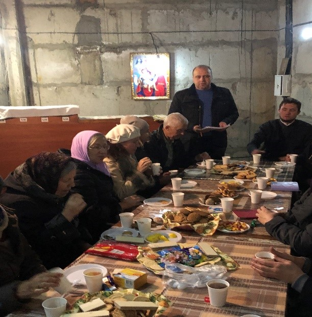
По субботам в 19:00 (после вечернего богослужения) по благословению настоятеля прихода св. ап. Иоанна Богослова протоиерея Алексея Савенко в храме святой благоверной царицы Тамары грузинской для всех желающих узнать больше о православии проводятся православные духовные беседы с участием:
- протоиерея Александра Иванова, духовника прихода;
- дьякона Антония Ковшара, выпускника Киевской духовной академии и семинарии;
- Петрова Андрея Петровича, преподавателя, выпускника аспирантуры по кафедре религиоведения.
План православных духовных бесед
Новогодние праздники
12 января 2020
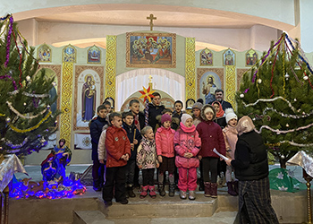
В воскресенье 12 января настоятель храма протоиерей Алексей (Савенко) вручил новогодние подарки учащимся воскресной школы.
Выступление учащихся воскресной школы: видео 1Выступление учащихся воскресной школы: видео 2
Рождество Христово
07 января 2020

В ночь с 6-го на 7-е января состоялось торжественное богослужение в честь Рождества Христова, которое возглавил настоятель храма, протоиерей - отец Алексей (Савенко).
Он поздравил всех собравшихся со светлым праздником Рождества Христова, пожелал помощи Божией во всех добрых начинаниях, а также рассказал в своей проповеди историю праздника.
Во время царствования в Иудее Ирода, который был под властью Рима, римский император Август издал повеление сделать в подчиненной ему земле иудейской всенародную перепись. Каждый иудей должен был записаться там, где жили его предки. Иосиф и Дева Мария происходили из рода Давидова и потому отправились из Назарета в город Давидов Вифлеем. Придя в Вифлеем, они не могли найти себе места в доме, в гостинице, и остановились за городом, в пещере, куда пастухи загоняли скот в ненастную погоду.
В этой пещере ночью у Пресвятой Девы Марии родился Младенец – Сын Божий, Христос Спаситель мира. Она спеленала Божественного Младенца и положила Его в ясли, куда кладут корм для скота.
После рождения Иисуса первыми Ему пришли поклониться пастухи, извещённые об этом событии явлением ангела.
На небе появилась чудесная звезда, которая привела к младенцу Иисусу из далёких восточных стран мудрецов (волхвов). Они преподнесли дары — золото, ладан и смирну; не как младенцу, а как Царю. К тому времени Святое Семейство уже нашло приют «в доме».
Узнав о рождении Мессии и желая Его уничтожить, царь Иудеи Ирод приказал убить всех младенцев мужского пола в возрасте до двух лет. Однако Христос был чудесно спасён от смерти, потому что ангел повелел Иосифу бежать вместе с семьёй в Египет.
Святое семейство находилось в Египте до тех пор, пока царь Ирод не умер. Вернувшись, Иисус, Богоматерь и Иосиф поселились в Назарете. Оттуда и начался Крестный путь Спасителя. А от Рождества Христова началась новая эра человечества — наша эра.
Дорогие братья и сестры, поздравляем вас с самым светлым и радостным праздником в году! Счастья Вам, пусть Бог всех вас хранит!
Христос рождается! Славите Его!
Праздник Святителя Николая Чудотворца
19 декабря 2019
В четверг 19 декабря состоялась праздничная литургия дня памяти святителя Николая, архиепископа Мир Ликийского.
Святитель Николай родился в 270 году в городке Патары, который располагался в области Ликии в Малой Азии и был греческой колонией. Родители будущего архиепископа были весьма состоятельными людьми, но при этом верили во Христа и активно помогали бедным.
С детства святитель Николай полностью посвятил себя вере, много времени проводил в храме. Повзрослев, стал чтецом, а затем и священником в церкви, где настоятелем служил его дядя, епископ Николай Патарский. После смерти родителей святитель Николай раздал все свое наследство бедным и продолжил церковное служение.
В годы, когда отношение римских императоров к христианам стало более терпимым, но гонения тем не менее продолжались, он взошел на епископский престол в Мире. Сейчас этот городок называется Демре, он расположен в провинции Анталия в Турции.
Нового архиепископа очень полюбили люди: он был добрым, кротким, справедливым, отзывчивым — ни одна просьба к нему не оставалась без ответа. При всем этом святитель Николай запомнился современникам как непримиримый борец с язычеством — разрушал идолов и капища, и защитник христианства — обличал еретиков.
Своей горячей молитвой ко Христу святитель Николай спас город Миры от страшного голода. Молился и помогал он тонущим морякам на суднах, выводил из заточения в тюрьмах неправедно осужденных.
Святитель Николай дожил до глубокой старости и умер примерно в 345-351 годах (точная дата неизвестна). Еще при жизни он прославился многими чудесами, но еще больше чудес от святителя Николая стало происходить после его смерти. Причем его покровительство распространялось прежде всего на плавающих и путешествующих, на "всех сирых и убогих", на скотоводство и земледелие, считался он также и "хранителем земных вод".
Позднее, уже в православной традиции, святитель Николай получил еще два имени - Николай Чудотворец и Николай Угодник. Главное же состояло в том, что святитель Николай стал поистине народным святым. Ему посвящено огромное число литературных памятников, храмов, монастырей, икон. А сам образ святителя Николая Чудотворца, как милостивого, доброго, земного святого продолжает освящать сердца православных людей.
Инцидент на территории храма
25 ноября 2019
21 ноября 2019 года, ранним утром, в праздник в честь Собора Архистратига Божьего Михаила на территории религиозной общины УПЦ парафии святого апостола и евангелиста Иоанна Богослова в Дарницком районе г. Киева неизвестными лицами было совершено силовое незаконное завладение имуществом общины храма (вывезен контейнер со строительным материалом и инструментами), срезана камера видеонаблюдения, заблокирован в помещении охраны и лишен средств связи сторож, а также снесена часть оградительного забора.
Инциденту предшествовало желание неизвестных лиц завладеть частью земельного участка, принадлежащего религиозной общине на основании государственного акта на право постоянного пользования землей.
В этот же день, после утренней Божественной Литургии, настоятель парафии о.Алексий со священниками отслужили молебен о сохранении территории религиозной общины от нападений врагов церкви. Вместе с церковным клиром молились прихожане парафии, а также неравнодушные к происходящему верующие люди.
| 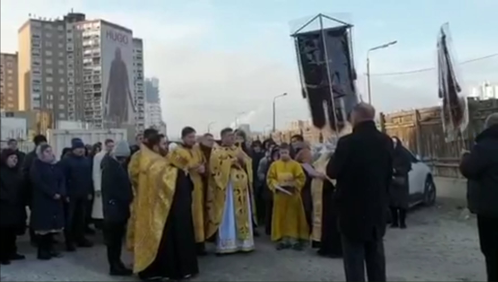 |
Религиозной общиной Украинской Православной Церкви прихода Святого Апостола Иоанна Богослова в Дарницком районе г. Киева предоставлена информационная справка о совершении в отношении неё противоправных действий, с целью завладения имуществом и лишения земельного участка, находящегося в пользовании общины.
Воскресная школа для взрослых
09 ноября 2019
Начиная с 09.11.2019 года при храме в честь св. апостола и евангелиста Иоанна Богослова продолжит работу воскресная школа для взрослых. Занятия будут проводиться каждую субботу в 19.00 после окончания вечернего богослужения.
Приглашаются все желающие, в том числе и люди не православного вероисповедания, желающие больше узнать о Православии.
Занятия длятся 1-2 часа и состоят из двух частей.
Первая часть -лекция по теме, которая изучается.
Вторая часть строится в форме ответов лектора на интересующие слушателей (не обязательно по теме данного занятия).
Контактный телефон: +38 (097) -436-97-71
Дорогие братья и сестры!
20 октября 2019
Обращаем Ваше внимание на изменения в расписании богослужений на октябрь месяц этого года в храме в честь святой благоверной царицы Тамары Грузинской.
Богослужения в пятницу вечером и субботу утром до конца месяца совершаться не будут.
В субботу в 10.00 в храме-часовне будет служиться панихида.
Также 20.10 в 17.00 в воскресенье будет отслужена вечерняя служба, а 21.10 в 09.00 в понедельник – Божественная Литургия.
Приглашаем всех на общую молитву.
Храм мучениц Веры, Надежды, Любови и матери их Софии отметил престольный праздник
30 сентября 2019
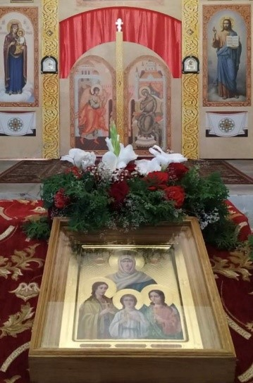
30 сентября 2019 года, в день памяти святых мучениц Веры, Надежды, Любови и матери их Софии, в нашем храме-часовне состоялась праздничная Божественная литургия, которую возглавил настоятель парафии святого апостола и евангелиста Иоанна Богослова протоиерей Алексей Савенко.
Ему сослужили протоиерей Александр, протоиерей Владимир, иерей Василий, диакон Антоний.
По завершении Божественной литургии был совершен крестный ход.
По окончании богослужения протоиерей Алексей Савенко поздравил всех молящихся с престольным праздником и пожелал крепости веры как у святых мучениц Веры, Надежды, Любови и матери их Софии, а также поздравил всех прихожанок, кто носит небесные имена святых мучениц, с днем Ангела.
После богослужения прихожане и гости храма были приглашены на праздничную трапезу.
Воскресная школа возобновляет свою работу
с 22 сентября 2019 года
16 сентября 2019
Занятия в школе будут проводиться по воскресеньям.
С 09.00 до 10.30 занимаются дети от 6 до 10 лет.
С 11.00 до 12.30 урок творческой деятельности - занимаются дети в возрасте от 10 до 14 лет.
С 13.00 до 14.30 изучения Библии - занимаются дети старшей группы в возрасте от 10 до 14 лет.
Руководитель - Екатерина Дуженко
ОБЪЯВЛЕНИЕ
29 августа 2019
Воскресная школа «Православное слово на Позняках» при храме Святого Апостола и Евангелиста Иоанна Богослова приглашает преподавателей богословских дисциплин для детей возрастом от 6 до 10 лет.
Приветствуется православное образование или желание учиться на православных курсах.
Желающих просим обращаться по телефону:
+38(050)-332-69-32;
+38(097)-083-03-61 (Екатерина).
Успение Пресвятой Богородицы
28 августа 2019

После Вознесения Господа Матерь Божия оставалась на попечении апостола Иоанна Богослова, а в его отсутствие жила в доме его родителей близ горы Елеонской. Для апостолов и всех верующих Она была утешением и назиданием. Беседуя с ними, Матерь Божия поведала о чудесных событиях Благовещения, бессеменного зачатия и нетленного от Нее рождения Христа, Его младенчества и всей земной жизни. Подобно апостолам, Она насаждала и утверждала Христианскую Церковь Своим присутствием, словом и молитвами. Благоговение апостолов к Пресвятой Деве было чрезвычайно.
По приятии Святого Духа в знаменательный день Пятидесятницы они пребывали в Иерусалиме около 10 лет, служа спасению иудеев и желая чаще видеть и слышать от Нее Божественные слова. Многие из новопросвещенных верою даже приходили из дальних стран в Иерусалим, чтобы видеть и слышать Пречистую Богородицу.
Ко времени Своего блаженного Успения Пресвятая Дева Мария опять прибыла в Иерусалим. Дни и ночи Она проводила в молитве. Настал третий час, когда должно было совершиться Успение Божией Матери. Внезапно облистал неизреченный Свет Божественной Славы, пред Которым померкли пылавшие свечи. Видевшие ужаснулись. Верх помещения как бы исчез в лучах необъятного Света, и сошел Сам Царь Славы, Христос, окруженный множеством Ангелов, Архангелов и других Небесных Сил с праведными душами праотцев и пророков, некогда предвозвещавших о Пресвятой Деве. Увидев Своего Сына, Божия Матерь воскликнула: «Величит душа Моя Господа, и возрадовася дух Мой о Бозе, Спасе Моем, яко призре на смирение рабы Своея» – и, поднявшись с ложа для встречи Господа, поклонилась Ему. Господь приглашал Ее в обители Вечной Жизни. Без всякого телесного страдания, как бы в приятном сне, Пресвятая Дева предала душу в руки Своего Сына и Бога. Дивна была жизнь Пречистой Девы, дивно и Успение Ее, как воспевает Святая Церковь: «Бог вселенной показует на Тебе, Царица, чудеса, превышающие законы природы. И во время Рождения Он сохранил Твое девство, и во гробе соблюл от истления тело Твое».
Пояс Богоматери, Ее святые одежды, хранимые с благоговением и разделяемые по лицу земли на части, творили и творят чудеса. Ее многочисленные иконы всюду изливают токи исцелений и знамений, а святое тело Ее, взятое на Небо, свидетельствует о нашем будущем пребывании с ним.
Преображение Господа Бога и
Спаса нашего Иисуса Христа
19 августа 2019
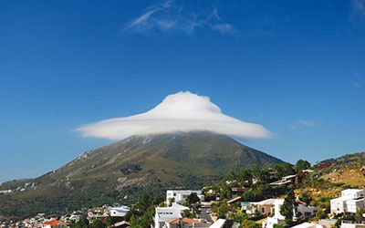
Еще раз в своей жизни в этот праздник мы духом присутствуем на Фаворской горе. Очами веры мы видим вместе с апостолами Петром, Иаковом и Иоанном, восшедшими со Спасителем на вершину этой горы, славу Божию в священные минуты этого события. Оно произошло незадолго до крестных страданий и смерти нашего Спасителя. На горе Преображения апостолы увидели рядом с преобразившимся Господом пророка Моисея и пророка Илию.
Это священное событие открывает тайну о жизни вечной, в которую уже вошли наши прадеды, деды, отцы, войдет и каждый из нас. Больше того, каждый из нас уже здесь на земле, на коротком отрезке времени, данном ему Господом для земной жизни, уже начинает этот путь жизни вечной.
На горе Преображения перед лицом изумленных учеников Господь Иисус Христос на несколько мгновений открыл не только Свою славу, но и славу Царства Небесного, горнего Иерусалима. И когда перед апостолами открылись двери небесного Иерусалима, и они увидели славу Спасителя и свет Небесного града, они пережили такое чувство радости, с которой воскликнул апостол Петр: «Хорошо нам здесь быть» (Лк. 9, 33).
Мы просим в этот день, когда Господь преобразился на Фаворе и показал славу Свою и свет нерукотворного духовного града Иерусалима, чтобы Он осветил и наши грешные души Своим светом присносущным и Своей Божественной благодатью помог нам грешным пройти земной путь достойно того призвания, к которому мы все предназначены, – быть небесными гражданами горнего Иерусалима.
Об Успеском посте и Кресте Христовом
14 августа 2019
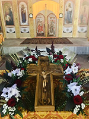
Снова по милости Божией вступаем мы в Успенский пост. Пост этот самый краткий и самый сладкий. Начинается он с освящения меда, потом будет освящение плодов. И самый легкий этот пост, потому что Божия Матерь заботится о том, чтобы иго Христово было для нас легким. И заботится о теле нашем так же, как и о душе.
Начинается пост с освящения меда, чтобы мы знали не только о той сладости, которую Господь дает для тела, но и о сладости духовной. Чтобы сладость, которая исходит от Креста Христова, открылась нам в течение поста. Как некогда в Ветхом Завете в горькие воды Мерры опускалось древо, и они становились сладкими, приятными.
Так да будет со всей нашей жизнью — от прикосновения Креста Христова к ней горечь ее да изменится в сладость.
Мы начинаем пост с поклонения Кресту Христову, потому что Успенский пост есть размышление о тайне смерти и о тайне жизни, земной и вечной.
Весь Успенский пост — крестный. Начало Успенского поста — Крест, и в середине его — Крест, Преображение Господне, с его светом, возвещающим об исходе, который Господь должен совершить в Иерусалиме. И праздник Нерукотворного образа Спасителя, который является как бы завершением этого нашего пути, — тоже праздник Креста.
Будем преодолевать всякое уныние, потому что Христос все победил. И смысл нашей жизни заключается в одном-единственном: чтобы мы через крестные скорби вошли в Его победу. Вслед за мучениками, вслед за всеми, кто узнал тайну Креста. И нет нам причины унывать, потому что Божия Матерь предстательствует сугубо за всех нас пред Господом.
Крещение Киевской Руси
28 июля 2019
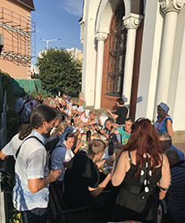
{kind=link}
По традиции в канун дня памяти святого равноапостольного великого князя Владимира и празднования 1031-летия Крещения Киевской Руси был совершен молебен у памятника святому на Владимирской горке Киева, который возглавил Священноархимандрит Киево-Печерской Лавры Блаженнейший Митрополит Киевский и всея Украины Онуфрий.
По окончании молебна во главе с Предстоятелем был совершен многотысячный крестный ход в Киево-Печерскую Лавру.
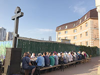
{kind=link}
Тысячи паломников приняли участие в богослужении. В завершении торжеств паломникам была предложена трапеза.
Парафия святого Иоанна Богослова приняла на своей территории более 50 паломников с Днепропетровской области. После трапезы и общей молитвы гости посетили храмы парафии.
Дорогие братья и сестры!
01 июля 2019
Обращаем Ваше внимание на изменения в расписании богослужений на июль месяц этого года в храме в честь святой благоверной царицы Тамары Грузинской.
Богослужения будут совершаться в субботу вечером и воскресенье утром, а также в праздничные дни.
Изменения в богослужении на август месяц будут обьявлены дополнительно.
Приглашаем всех верующих и гостей города на общую молитву.
Праздник Святой Троицы
16 июня 2019

День, который мы празднуем, и его смысл трудно объяснить. Дело даже не в словах. Когда мы говорим, что наш Бог – Троица, то и чувства приходят в смятение. Как это понимать? Или даже важнее – как к этому относиться?
Ведь важнее всего для человека не то, каков мир и почему он устроен именно так, но что я делаю в этом мире, зачем пришел сюда и как я своей жизнью могу ответить на тайну мироздания…
Здесь мы начинаем приближаться к постижению смысла нашей веры в Бога Троицу. Мы смотрим вокруг, замечаем удивительную гармонию и мудрость в природе, людях, обществе; мы вглядываемся в себя, в свои чувства, переживания и понимаем, что все это слишком таинственно, премудро и прекрасно, чтобы быть порождением слепого случая. Эта тайна могла произойти лишь от другой Тайны…
Святая Троица – это полнота. Тайна Троицы – это любовь. И здесь открывается причина и смысл того мира, загадочности которого мы каждый день удивляемся. Бог творит мир и людей, потому что Он действительно желает и может объять их Своей любовью. Он Себя приносит в жертву за отвернувшееся от Него создание. И только в Троице можно постичь величие этого события.
На тайну Святой Троицы мы призваны ответить тайной любви, вложенной Богом в каждого человека. И это очень важно – всегда напоминать себе об этом. Напоминать о том, что Богу не нужны наши добрые дела, духовные упражнения, молитвы, если они в нас самих не открывают следы Божественной тайны. Напоминать о том, что эту тайну мы должны уважать в каждом, кто встречается на нашем пути.
Память апостола и евангелиста Иоанна Богослова
21 мая 2019

В день памяти апостола и евангелиста Иоанна Богослова, 21 мая 2019, по случаю престольного праздника, по благословению Блаженнейшего Митрополита Киевского и всея Украины Онуфрия, ректор Киевской духовной академии и семинарии епископ Белогородский Сильвестр возглавил Божественную литургию в храме в честь апостола Иоанна Богослова первого Дарницкого благочиния г. Киев.
Его Преосвященству сослужили: секретарь Киевской епархии по г. Киеву протоиерей Виктор Иващук, благочинный первого Дарницкого благочиния протоиерей Василий Беляк, настоятель храма протоиерей Алексей Савенко, а также клирики и гости храма в священном сане.
После чтения Святого Евангелия владыка ректор обратился к присутствующим с архипастырским словом.
За богослужением были вознесены молитвы за единство Святого Православия и за мир в Украине.
После отпущения у иконы святого апостола Иоанна Богослова был совершен чин прославления.
В конце Литургии епископ Сильвестр передал приветствие Блаженнейшего Митрополита Онуфрия настоятелю, клирикам и прихожанам храма по случаю престольного праздника и пожелал Божьей помощи и благословения.
Дополнительная информация о праздничном Богослужении находится на сайте "Киевской духовной академии и семинарии"
Христос Воскресе! Воистину Воскресе!
28 апреля 2019
|
В ночь с 27 на 28 апреля в храме святой благоверной царицы Тамары (Грузинской) состоялось праздничное Пасхальное Богослужение.
Назвать этот день праздником, даже самым большим праздником – слишком мало. Он важнее любого праздника и значимее любого события в мировой истории. В этот день все человечество, а значит – каждый из нас, получили надежду на спасение, потому что Христос воскрес. Этот день называется Пасхой, что значит – «переход», и отмечается в Православной Церкви как самый главный день в году. В Пасхе – вся суть христианства, весь смысл нашей веры.
«Слово «Пасха», – пишет святой Амвросий Медиоланский, – означает «прехождение». Назван же так этот праздник, торжественнейший из праздников, в ветхозаветной Церкви – в воспоминание исхода сынов Израилевых из Египта и вместе с тем избавления их от рабства, а в Церкви новозаветной – в ознаменование того, что Сам Сын Божий, чрез Воскресение из мертвых, перешел от мира сего к Отцу Небесному, от земли на Небо, освободив нас от вечной смерти и рабства врагу, даровав нам «власть быть чадами Божиими».
«Своим Воскресением Христос дал людям постигнуть истинность Своего Божества, истинность Своего высокого учения, спасительность Своей смерти. Воскресение Христа – это завершение Его жизненного подвига. Иного конца не могло быть, ибо это прямое следствие нравственного смысла Христовой жизни», – это слова из пасхальной проповеди архимандрита Иоанна (Крестьянкина).
Христос воскрес и вознесся на Небо, но Он всегда присутствует в Своей Церкви. И любой из нас может прикоснуться к Нему – на главном христианском богослужении, литургии, когда священник выходит к людям с Телом и Кровью воскресшего Христа…
И нет на земле слов радостнее, чем те, что говорят друг другу люди в Светлое воскресенье и последующие сорок дней:
«Христос воскресе! Воистину воскресе!»
С праздником, дорогие сестры и братья!!!
Вход Господень в Иерусалим.
Вербное Воскресение.
21 апреля 2019
21 апреля в день входа Господня в Иерусалим (Вербное воскресенье) в храме святой благоверной царицы Тамары (Грузинской) состоялась праздничная Божественная литургия.
Bepбнoe вocкpeceньe – этo двунaдecятый пpaздник пpaвocлaвнoгo кaлeндapя, пocлeднee вocкpeceньe пepeд Пacxoй. Coглacнo Библии, в этoт дeнь Ииcуc нa мoлoдoм ocлe тopжecтвeннo въexaл в вopoтa Иepуcaлимa.
Coбpaвшиecя люди пpивeтcтвoвaли eгo кaк Meccию, Cпacитeля, пpизвaннoгo иcпpaвить миp, внecти в нeгo paвнoвecиe и блaгoпoлучиe. Oни paзмaxивaли пaльмoвыми вeткaми - символом триумфа, paccтилaли пepeд ним cвoи oдeжды и пeли пecнoпeния. Именно эти ветви символизирует наша верба. Люди кричат: «Осанна! Благословен грядущий во Имя Господне, Царь Израилев!» («Осанна» значит «Спасай нас»).
Узнав о великом чуде — воскрешении четверодневного Лазаря, люди с ликованием встречали Спасителя, воздавая Ему царские почести. Всего через четыре дня Христос будет осужден и распят, но сегодня толпа кричит: «Осанна сыну Давидову! Благословен грядый во имя Господне!»…
Стояние на Богослужении с ветвями и зажженными свечами — это воспоминание торжественного Входа Царя Славы на вольные страдания. Молящиеся как бы встречают невидимо грядущего Господа и приветствуют Его, как победителя ада и смерти.
Крестопоклонное воскресенье
31 марта 2019
«И, подозвав народ с учениками Своими, сказал им: кто хочет идти за Мною, отвергнись себя, и возьми крест свой, и следуй за Мною. Ибо кто хочет душу свою сберечь, тот потеряет ее, а кто потеряет душу свою ради Меня и Евангелия, тот сбережет ее. Ибо какая польза человеку, если он приобретет весь мир, а душе своей повредит? Или какой выкуп даст человек за душу свою? Ибо кто постыдится Меня и Моих слов в роде сем прелюбодейном и грешном, того постыдится и Сын Человеческий, когда приидет в славе Отца Своего со святыми Ангелами. И сказал им: истинно говорю вам: есть некоторые из стоящих здесь, которые не вкусят смерти, как уже увидят Царствие Божие, пришедшее в силе».
(Мк., 37 зач., VIII, 34 – IX, 1).
Воскресенье третьей недели Великого поста в Православной Церкви носит название Крестопоклонной недели. В cубботу вечером на всенощном бдении в центр храма торжественно выносится Животворящий Крест Господень – напоминание о приближающейся Страстной Седмице и Пасхе Христовой.
Крест выносится верующим для того, чтобы напоминанием о страданиях и смерти Господней воодушевить и укрепить постящихся к продолжению подвига поста.
Иными словами, износимый на середину храма для поклонения Крест Господень – это наше воинское знамя, которое выносится, как и в обыкновенной мирской брани, на поле сражения для того, чтобы возбудить в нас, воинах Христовых, бодрость духа и неустрашимое мужество для успешного продолжения борьбы и окончательной победы над врагами.
Великомученик Феодор Тирон
19 марта 2019
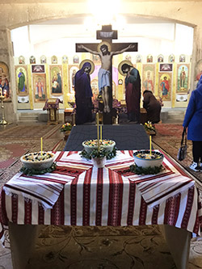
{kind=link}
Феодор Тирон (Тирон – т.е. воин-новобранец) — христианский святой, великомученик, память которого Церковь вспоминает в субботу на первой неделе Великого поста.
Он жил во времена императора Максимилиана, отличавшегося необузданным нравом. В ту пору солдаты были обязаны приносить жертвы римским божествам. Император желал, чтобы и его самого народ почитал как бога. Воинов это касалось в первую очередь. Когда Феодора стали принуждать к принесению жертвы идолам, он решительно отказался. За то, что исповедал себя христианином, Феодор был заключён в тюрьму и обречён на голодную смерть. Обнаружив через некоторое время Феодора живым, ему вновь предложили совершить жертвоприношение. После отказа он был подвергнут жестоким пыткам, но так и не отступился от веры.
В итоге он был приговорен к сожжению на костре. Его останки, по преданию не повреждённые огнём, попросила христианка Евсевия и погребла в своём доме в городе Евхаитах. Позднее его мощи были перенесены в Константинополь, а глава – сначала в Бриндизи, а затем – в Гаэту.
С его именем связано одно интересное событие церковной истории.
В IV веке в Константинополе у власти стоял император Юлиан Отступник, гонитель христиан. Как-то, в первую седмицу Великого поста, он приказал тайно окропить идоложертвенной кровью все продукты на рынках города. Апостолы призывали христиан «воздерживаться от идоложертвенного и крови», поэтому поступок правителя был жестокой издевкой над христианской верой.
И тут местному архиепископу, Евдоксию, явился во сне великомученик Феодор. Святой, предупредил Евдоксия и велел не покупать идоложертвенную пищу, а сварить коливо из домашних запасов крупы (коливо— вареная с медом пшеница).
В память об этом чудесном событии на первой неделе Великого поста, в навечерие субботы (пятницу) после Литургии Преждеосвященных Даров, в храмах звучит канон великомученику Феодору. Его составил преподобный Иоанн Дамаскин. В этот день благословляют и раздают прихожанам коливо.
10 марта 2019
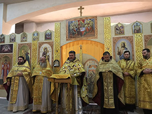
{kind=link}
10 марта 2019 года, в нашем храме святой благоверной царицы Тамары Грузинской парафии Святого Иоанна Богослова (г. Киев, Дарницкий район, ул. Гришка, 1) состоялось собрание прихожан под председательством настоятеля храма и головы Парафиальной рады протоиерея Алексея Савенко в присутствии членов Парафиальной рады, клириков храма. Прихожане были ознакомлены с текстом и решением протокола членов Парафиальных Зборов, в котором была выражена АБСОЛЮТНАЯ ПОДДЕРЖКА и ПОСЛУШАНИЕ Блаженнейшему митрополиту Киевскому и всея Украины ОНУФРИЮ, предстоятелю УКРАИНСКОЙ ПРАВОСЛАВНОЙ ЦЕРКВИ.
Собрание верующих нашей парафии, единым сердцем и едиными устами (100% - ЗА) утвердили протокол Парафиальных зборов, ПОДТВЕРДИВ тем самым подчиненность (юрисдикцию) в канонической и административной деятельности религиозной организации «РЕЛИГИОЗНАЯ ОБЩИНА УКРАИНСКОЙ ПРАВОСЛАВНОЙ ЦЕРКВИ ПРИХОДА СВЯТОГО АПОСТОЛА ИОАННА БОГОСЛОВА В ДАРНИЦКОМ РАЙОНЕ Г. КИЕВА» к канонической Украинской Православной Церкви, предстоятелем которой является Блаженнейший митрополит ОНУФРИЙ.
Прощеное воскресенье
10 марта 2019
Последнее воскресенье перед началом Великого поста называется Неделей сыропустной (именно в этот день заканчивается употребление в пищу молочных продуктов), или Прощеным воскресеньем. В этот день на вечернем богослужении в храмах совершается особый чин прощения, когда священнослужители и прихожане взаимно просят друг у друга прощения, чтобы вступить в Великий пост с чистой душой, примирившись со всеми ближними.
«…Начиная подвиг Великого поста, начнем же решать два главнейших духовных урока: не судить и не соблазнять! А чтобы нам положить начало этому подвигу с первых же великопостных дней, надо учиться видеть, судить и осуждать только самого себя – того единственного человека, которого мы знаем подлинно, всесторонне и глубоко. Вот где суд без милости будет во спасение. Ибо этот единственный суд приведет нас в разум истины. Он дарует нам зрение той пропасти, на краю которой мы стоим и которую изрываем своими грехами, своими долгами Богу и людям, своим осуждением других.
И этот наш суд над собой исторгнет из сердца нашего живой спасительный вопль, достигающий неба: «Господи! Помилуй мя Боже, милостив буди мне грешному!» И начнется чудо нашего спасения. Миром, тишиной и любовью утешит Господь наши покаянные души и сердца. По слову же дорогого нам всем старца, преподобного Серафима Саровского: «Стяжи дух мирен, и тысячи спасутся вокруг тебя» – начнется преображение жизни вокруг нас…»
После Божественной Литургии во дворе храма святой благоверной царицы Тамары все желающие могли отведать блины со сметаной, вареньем и с чаем, а также пироги и сладости.
А возле здания воскресной школы прошла масленичная ярмарка: дети выставили свои лучшие работы, а также сладости, изготовленные совместно с родителями.
03 марта 2019
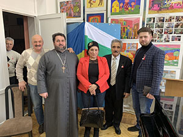
{kind=link}
3 марта 2019 года, по приглашению Владимира Дмитриевича Сариогло, председателя Киевского общества болгарской культуры "Родолюбие имени профессора Ивана Андреевича Стоянова", созданого в 1989 году для объединения всех украинских болгар, клирик нашей парафии протоиерей Зиновий Васильев (который более 15 лет духовно окормляет эту организацию) принял участие в торжественном мероприятии, посвященном празднику «День освобождения Болгарии от османского ига!»
Великий покаянный канон святого Андрея Критского
03 марта 2019

Великим постом с понедельника по четверг первой седмицы на великих повечериях читается покаянный канон святого Андрея Критского.
Великий канон Андрея Критского — это чудо всей церковной гимнографии, это тексты удивительной силы и красоты.
Канон этот назван Великим как по множеству мыслей и воспоминаний, в нем заключенных, так и по количеству содержащихся в нем тропарей – около 250 (в обычных канонах их около 30).
Для чтения на первой седмице поста канон разделяется на четыре части, по числу дней. В среду и четверг к Великому канону прибавляется несколько тропарей в честь преподобной Марии Египетской, пришедшей из глубокого духовного падения к высокому благочестию. Великий канон завершается тропарями в честь его творца – святого Андрея Критского.
Святитель Андрей Критский оставил глубокий след в православном предании и как великий святой, и как богослов, и как замечательный песнописец и гимнограф. О нем известно сравнительно немного.
Родился он около 660 года. Происходил из Палестины. В молодости отрекся от мира и ушел в лавру святого Саввы. Затем оказался в Константинополе, где исполнял должность орфанотрофа, то есть надзирателя за сиротскими домами. На этой должности он прославился своей деятельной благотворительностью и милосердием. Около 712 года он стал епископом Крита. Житие сообщает, что именно благодаря его молитве остров Крит был спасен от арабского нашествия. Отошел святитель ко Господу около 740 года. Память святителя Андрея Критского совершается 4 июля.
Святитель Андрей Критский наиболее известен своим Великим, или Покаянным, каноном. Канон представляет собой пронзающий душу сердечный плач праведника о грехах. Самое начало: «Откуду начну плакати окаянного моего жития деяний? кое ли положу начало… нынешнему рыданию» (песнь 1), – настраивает душу на скорбь и покаяние, к «уязвлению сердца».
Творец канона оплакивает не только себя, но и все согрешившее человечество. Он припоминает все прегрешения, все грехопадения – от Адама до Нового Завета.
То, что нам дано в Покаянном каноне святителя Андрея Критского, является библейским, церковным, подлинно вселенским опытом покаяния, уязвления сердца, мучительного совлечения с себя ветхого, мертвого человека и облечения в нового Адама, во Христа Иисуса, Господа нашего, Которому слава во веки.
Сретение Господне
15 февраля 2019
В среду 15 февраля состоялась Божественная литургия в честь Сретения Господня, великого христианского праздника, посвящённого воспоминанию событий, происшедших в 40-й день земной жизни Иисуса Христа, а именно встрече Божественного Младенца в Иерусалимском Храме двумя ветхозаветными праведниками — Симеоном Богоприимцем и Анной Пророчицей.
По закону Моисееву, в сороковой день по рождении младенца мужского пола, первенца, мать должна была явиться с младенцем в храм для принесения жертвы о своем очищении, для представления младенца Богу и «выкупа», ибо по закону Моисееву все первенцы принадлежали Богу. В жертву приносили агнца (ягненка) и горлицу, а в случае бедности — двух горлиц, или голубиных птенцов. Выкуп же состоял из определенной законом цены (пяти сиклей). Пречистая Дева пришла в храм, чтобы исполнить все по закону. В очистительную жертву она, по своей бедности, могла принести только двух горлиц. В Иерусалимском храме младенца Иисуса встретили праведный Симеон, которому было обещано Святым Духом, что он не умрет, пока не увидит Христа Господня, и вдовица Анна, восьмидесяти четырех лет, жившая при храме. Праведный Симеон взял младенца на руки и сказал: «Ныне отпускаешь раба Твоего, Владыко, по слову Твоему, с миром; ибо видели очи мои спасение Твое, которое Ты уготовал пред лицем всех народов, свет к просвещению язычников и славу народа Твоего Израиля». (Лк 2:29-32).
Анна-пророчица поклонилась новорожденному Христу и вышла из храма, неся горожанам новость о пришествии Мессии: «И она в то время, подойдя, славила Господа и пророчествовала о Нём всем, ожидавшим избавления в Иерусалиме» (Лк 2, 36-38).
Слово «сретение» на старославянском языке означает «встреча», а второе значение этого слова — «радость». И этот праздник символизирует не просто приношение младенца Иисуса в храм и встречу Симеона и Анны с младенцем Иисусом, но встречу всего человечества в лице старца Симеона с Богом.
После Божественной литургии в храме святой благоверной царицы Тамары состоялся великий чин освящения церковных свеч и воды.